Resumen
En este tutorial se muestra cómo desarrollar una API REST básica para realizar operaciones CRUD (Crear, Leer, Actualizar y Eliminar) sobre una base de datos MySQL con Slim Framework utilizando XAMPP como entorno de desarrollo. Con fines didácticos, primero se creará una API REST sencilla con Slim Framework pero sin usar una base de datos. Posteriormente, se configurará una base de datos MySQL y se adaptará la API para permitir la interacción con la base de datos, organizando el código siguiendo el patrón MVC (Modelo-Vista-Controlador) con una clara separación entre modelos, controladores y rutas. Se explica también cómo instalar XAMPP en Windows y cómo configurar Apache para interpretar las rutas de Slim. Además, se realiza una introducción básica a PHP mediante ejemplos de operaciones básicas, control de flujo, funciones, funciones de devolución de llamada, uso de arrays, etc. Asimismo, se muestran herramientas para pruebas de APIs, como Postman, y cómo configurar el entorno, incluyendo buenas prácticas de organización de código y estructura de directorios para un desarrollo mantenible y escalable.
-
Conocer los conceptos básicos de PHP y cómo desarrollar aplicaciones web en PHP.
-
Aprender a instalar XAMPP en Windows y configurar Apache para interpretar las rutas de Slim.
-
Desarrollar una API REST básica con Slim Framework y realizar operaciones CRUD sobre una base de datos MySQL.
-
Conocer herramientas para pruebas de APIs, como Postman, y cómo configurar el entorno de desarrollo.
|
Disponibles:
|
1. Introducción
PHP (acrónimo recursivo de "PHP: Hypertext Preprocessor") es un lenguaje de programación de código abierto muy popular especialmente adecuado para el desarrollo web. Es un lenguaje de programación de propósito general que se adapta especialmente al desarrollo web y puede ser incrustado en HTML. PHP es un lenguaje de programación del lado del servidor, lo que significa que el código se ejecuta en el servidor y no en el navegador del usuario, como ocurre con JavaScript. Además, es interpretado y no compilado, lo que significa que el código se ejecuta línea por línea.
Por otro lado, XAMPP es un paquete de software libre que facilita la instalación de un servidor web Apache, el lenguaje de programación PHP y una base de datos MySQL en sistemas operativos Windows, Linux y macOS. XAMPP es una solución todo en uno que permite a los desarrolladores crear aplicaciones web locales y probarlas antes de subirlas a un servidor remoto. Las siglas XAMPP significan: (X) de cualquier sistema operativo, Apache, MySQL, PHP y PHPMyAdmin, este último es una herramienta de administración de bases de datos MySQL desarrollada en PHP y que se ejecuta en un servidor web.
2. Configuración del entorno de desarrollo
Para poder desarrollar aplicaciones web en PHP que interactúen con MySQL, es necesario contar con un entorno de desarrollo que incluya un servidor web, un intérprete de PHP y una base de datos MySQL. XAMPP es una solución todo en uno que incluye Apache, PHP y MySQL, por lo que es una opción muy adecuada para desarrollar aplicaciones web en PHP. En este tutorial se explicará cómo instalar XAMPP en Windows y cómo configurar el entorno de desarrollo para poder desarrollar aplicaciones web en PHP.
2.1. Instalación de XAMPP
Para instalar XAMPP, se debe descargar el instalador desde la página web oficial XAMPP. Se elegirá la versión para el sistema operativo en el que se vaya a realizar la instalación y basta con seguir las instrucciones de instalación. Por ejemplo, para la instalación en Windows, se puede descargar la última versión del instalador y ejecutarlo. Durante la instalación, se pueden seleccionar los componentes que se desean instalar, como Apache, MySQL, PHP y PHPMyAdmin. En nuestro caso, necesitaremos instalar Apache, MySQL, PHP y PHPMyAdmin.
|
Se deberá tener cuidado con las opciones de instalación, ya que se instalarán servicios que pueden entrar en conflicto con otros servicios que ya que estén en ejecución. Además, se debe evitar instalar en la carpeta |
Tras la instalación, se deberá ejecutar el panel de control de XAMPP y activar los servicios de Apache y MySQL. Para ello, se deberá abrir el panel de control de XAMPP y hacer clic en los botones Start de Apache y MySQL. Si los servicios se han iniciado correctamente, se mostrará un mensaje indicando que los servicios se han iniciado correctamente.
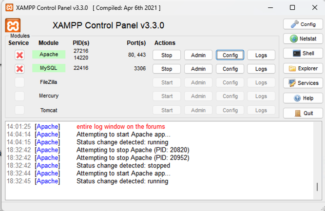
2.1.1. Configuración de Apache
Apache es un servidor web de código abierto que es ampliamente utilizado. Es un servidor web multiplataforma que soporta PHP y Perl y otros lenguajes de programación. Es muy flexible y configurable, y permite a los desarrolladores personalizar la configuración del servidor web a sus necesidades.
La configuración de Apache en XAMPP se realiza pulsando el botón Config del panel de control de XAMPP y seleccionando la opción Apache (httpd.conf). Se abrirá el archivo de configuración de Apache en un editor de texto. En este archivo se pueden configurar diferentes aspectos del servidor web, como los puertos en los que escucha el servidor, los directorios de documentos, los módulos que se cargan, etc.
|
Si el equipo en el que se está ejecutando XAMPP tiene el puerto 80 ocupado por otro servicio, se puede cambiar el puerto en el que escucha Apache. Para ello, se deberá modificar la directiva |
2.1.2. Comprobación de la instalación
Si la instalación de XAMPP se ha llevado a cabo de forma satisfactoria, el panel de control de XAMPP deberá mostrar los servicios de Apache y MySQL en verde, lo que indica que los servicios se han iniciado correctamente. Para comprobar que el servidor web está funcionando correctamente, se puede abrir un navegador web y acceder a la dirección http://localhost. Si se muestra la página de inicio de XAMPP, significa que el servidor web está funcionando correctamente.
|
Si se ha realizado un cambio de puerto en la configuración de Apache (p.e. |
La imagen siguiente muestra la página de inicio de XAMPP, que indica que el servidor web está funcionando correctamente.
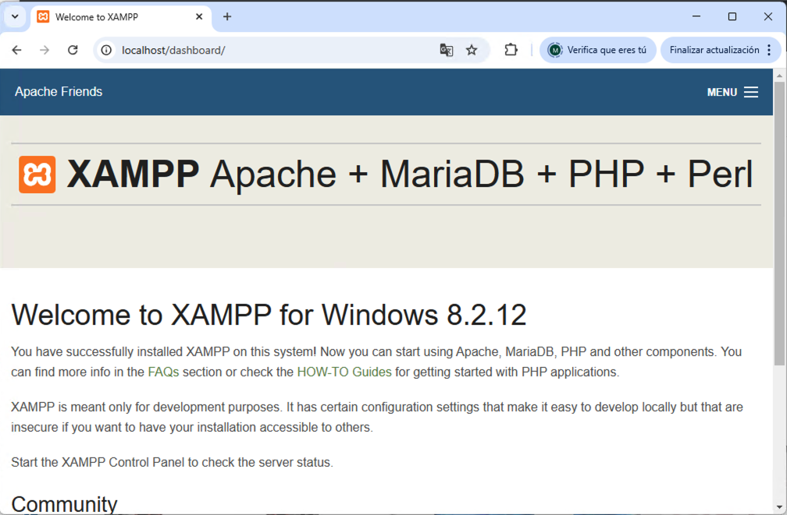
2.1.3. Comprendiendo el funcionamiento de la plaforma y la carpeta de publicación
XAMPP es una plataforma que incluye Apache como servidor web. Este servidor web se encarga de recibir las peticiones HTTP de los clientes (p.e. navegadores web) y devolver las respuestas adecuadas. Apache utiliza el protocolo HTTP para comunicarse con los clientes y el protocolo TCP/IP para comunicarse con el servidor. Como nuestro servidor web es local, se utiliza la dirección http://localhost para acceder al servidor web. Así, introduciremos esta dirección en el navegador web para acceder a nuestro servidor web local.
De forma nativa, Apache puede servir contenido estático, como archivos HTML, CSS, imágenes, etc. Sin embargo, también puede servir contenido dinámico, como páginas PHP, a través de módulos que se cargan en el servidor. Con contenido dinámico se hace referencia a contenido que se genera en tiempo de ejecución, en lugar de estar almacenado en un archivo estático. Por ejemplo, una página PHP puede mostrar la fecha y hora actuales, el contenido de una base de datos, etc, sin necesidad de que el contenido que se presente esté almacenado en un archivo estático. La figura siguiente ilustra el código PHP para mostrar la hora actual, el código HTML generado (que se puede ver en las opciones para desarrolladores del navegador) y el resultado tal y como se visualiza en el navegador. Obsérvese como se genera de forma dinámica el contenido de la página. Esta tarea es realizada en el servidor combinando el contenido HTML e interpretando el código PHP línea a línea.
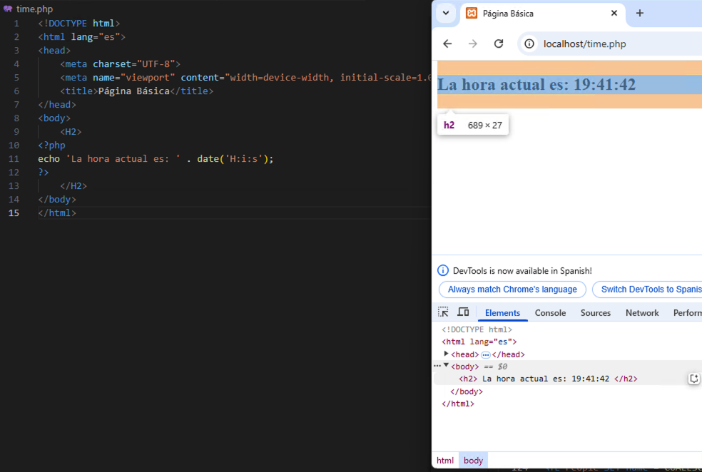
Para poder ampliar estas prestaciones de Apache se deben instalar módulos adicionales. Por ejemplo, para poder servir páginas PHP, es necesario instalar un intérprete de PHP en el servidor. La buena noticia es que XAMPP ya incluye PHP, por lo que no es necesario instalar nada adicional para poder servir páginas PHP en nuestro caso.
La cuestión que cabe plantearse ahora es dónde almacenar el contenido propio que vamos a desarrollar para poder acceder a él a través del servidor web, ya que hasta ahora nos hemos limitado a ver la página de inicio de XAMPP. Para ello es muy importante conocer el concepto de carpeta de publicación. La carpeta de publicación es el directorio del servidor en el que se almacenan los archivos que se desean servir a través del servidor web. Todos los archivos que se encuentren en la carpeta de publicación estarán accesibles a través del servidor web. Por defecto, la carpeta de publicación de Apache es el directorio htdocs, que se encuentra en el directorio de instalación de XAMPP. Todos los archivos que se encuentren en el directorio htdocs estarán accesibles a través del servidor web. Si se han seguido los pasos de este tutorial la carpeta de publicación será C:\xampp\htdocs. Por ejemplo, si se crea un archivo index.html en el directorio C:\xampp\htdocs, se podrá acceder a él a través de la dirección http://localhost/index.html.
2.1.4. Creación de un archivo PHP
Es el momento de probar el entorno con un script propio en PHP. Para ello, se deberá crear un archivo con extensión .php en el directorio C:\xampp\htdocs, la carpeta de publicación de Apache. Para ello, se puede utilizar un editor de código como Notepad++ o Visual Studio Code. Por ejemplo, se puede crear un archivo llamado hello.php con el siguiente contenido:
<?php
echo "¡Hola a todos!";
?>Tras crear el archivo hello.php, se deberá abrir un navegador web y acceder a la dirección http://localhost/hello.php. Si se muestra el mensaje "¡Hola, Mundo!", significa que PHP está funcionando correctamente. La figura siguiente muestra el mensaje que se muestra al acceder a la dirección http://localhost/hello.php.
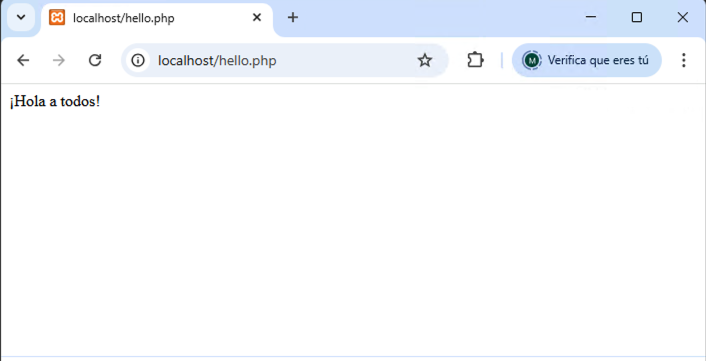
|
Si el archivo |
2.2. Instalación de Composer
Composer es un administrador de dependencias para PHP que facilita la gestión de las dependencias de un proyecto PHP. Composer permite instalar y actualizar bibliotecas de terceros, así como gestionar las dependencias de un proyecto PHP de forma sencilla. Composer utiliza un archivo composer.json para definir las dependencias de un proyecto y un archivo composer.lock para bloquear las versiones de las dependencias. Composer se instala a nivel de sistema y se puede utilizar en cualquier proyecto PHP. En nuestro caso usaremos Composer para instalar Slim Framework, un microframework PHP para el desarrollo de APIs RESTful.
Para instalar Composer, se deberá descargar el instalador desde la página web oficial Composer. Se puede descargar el instalador para Windows y ejecutarlo. Durante la instalación, se seguirán las opciones predeterminadas y se instalará en una carpeta independiente de XAMPP (p.e. C:\composer). Tras la instalación, se deberá abrir una terminal y ejecutar el comando composer para comprobar que Composer se ha instalado correctamente. Si Composer se ha instalado correctamente, se mostrará un mensaje con la versión de Composer y los comandos disponibles, como se muestra a continuación:
composer
______
/ ____/___ ____ ___ ____ ____ ________ _____
/ / / __ \/ __ `__ \/ __ \/ __ \/ ___/ _ \/ ___/
/ /___/ /_/ / / / / / / /_/ / /_/ (__ ) __/ /
\____/\____/_/ /_/ /_/ .___/\____/____/\___/_/
/_/
Composer version 2.7.6 2024-05-04 23:03:15
Usage:
command [options] [arguments]
Options:
-h, --help Display help for the given command. When no command is given display help for the list command
-q, --quiet Do not output any message
-V, --version Display this application version
--ansi|--no-ansi Force (or disable --no-ansi) ANSI output
...2.3. Herramientas para pruebas de APIs
Existen varias herramientas que permiten a los desarrolladores probar y depurar APIs. Algunas de las herramientas más populares son:
-
Postman: Es una herramienta de desarrollo de APIs que permite a los desarrolladores enviar solicitudes HTTP, ver las respuestas y realizar pruebas automatizadas. Postman proporciona una interfaz gráfica que facilita la creación y envío de solicitudes, así como la visualización de las respuestas. Además, cuenta con un servicio en la nube que permite compartir colecciones de solicitudes con otros desarrolladores.
-
cURL: Es una herramienta de línea de comandos que permite enviar solicitudes HTTP y ver las respuestas. -
Insomnia: Es una herramienta similar a Postman que permite enviar solicitudes HTTP y ver las respuestas.
2.4. Instalación de Slim Framework
Slim es un microframework PHP que permite crear aplicaciones web rápidas y sencillas. En nuestro caso lo usaremos para crear una API REST que permita la comunicación entre el frontend y la base de datos. Antes tendremos que realizar una configuración en el servidor Apache para que pueda interpretar las rutas de Slim.
2.4.1. Configuración general de Apache para Slim
Para que Apache pueda interpretar las rutas de Slim, se debe habilitar la reescritura de URLs en la configuración de Apache. La reescritura de URLs permite modificar la URL de una petición HTTP antes de que sea procesada por el servidor web. En el caso de Slim, la reescritura de URLs es necesaria para que Apache pueda interpretar las rutas de Slim y dirigir las peticiones al archivo de entrada de la aplicación.
Para ello, se debe modificar el archivo de configuración de Apache httpd.conf. En el panel de control de XAMPP, hacer click en el botón Config de Apache y seleccionar la opción httpd.conf. Se abrirá un archivo de configuración de Apache en el editor de texto por defecto. Cambiaremos la configuración de <Directory> para que permita la reescritura de URLs. Para ello, se debe cambiar la directiva AllowOverride None por AllowOverride All. El bloque de configuración debería quedar de la siguiente forma:
<Directory />
Options Indexes FollowSymLinks
AllowOverride All
Require all granted
</Directory>2.4.2. Proceso de instalación de Slim
Dentro de la carpeta raíz del proyecto, crear un archivo composer.json con el siguiente contenido:
{
"name": "slim/slim-skeleton",
"description": "A Slim Framework skeleton application for rapid development",
"autoload": {
"psr-4": {
"App\\": "src/"
}
},
"require": {
"php": "^8.1",
"slim/slim": "4.*",
"nyholm/psr7": "^1.8",
"nyholm/psr7-server": "^1.1",
"laminas/laminas-diactoros": "^3.3"
},
"config": {
"process-timeout": 0
}
}Tras crear el archivo, abrir una terminal en la carpeta raíz del proyecto y ejecutar composer install. Composer descargará las dependencias necesarias para Slim y las instalará en la carpeta vendor. Como consecuencia, Slim Framework quedara instalado en el proyecto.
2.4.3. Configuración de Apache en la aplicación
Para que Apache pueda interpretar las rutas de Slim en el proyecto, se deben crear dos archivos .htaccess, uno en la carpeta raíz del proyecto y otro en la carpeta public.
El archivo .htaccess de la carpeta raíz debe contener lo siguiente:
RewriteEngine on
RewriteRule ^$ public/ [L]
RewriteRule (.*) public/$1 [L]El archivo .htaccess de la carpeta public debe contener lo siguiente:
RewriteEngine On
RewriteCond %{REQUEST_FILENAME} !-f
RewriteCond %{REQUEST_FILENAME} !-d
RewriteRule ^ index.php [QSA,L]Tras realizar estos cambios, se debe reiniciar el servicio de Apache desde el panel de control de XAMPP.
2.4.4. Creación de una ruta de prueba
Para comprobar que Slim está funcionando correctamente, se puede crear una ruta de prueba en el archivo public/index.php:
<?php
require dirname(__DIR__) . '/vendor/autoload.php';
use Psr\Http\Message\RequestInterface;
use Psr\Http\Message\ResponseInterface;
use Slim\Factory\AppFactory;
// Create the application
$app = AppFactory::create();
// Define the application routes
$app->get('/', function (RequestInterface $request, ResponseInterface $response, array $args) { (1)
// Set the response content type
header('Content-Type: application/json; charset=utf-8');
// Set the response status code
$data['status'] = 200;
// Set the response data
$data['message'] = 'Hello from Slim';
// Write the response
$response->getBody()->write(json_encode($data));
// Return the response
return $response;
});
// Set the base path for the application if ruuning with Apache
$app->setBasePath('/sample-rest-api'); (2)
// Run the application
$app->run();| 1 | Endpoint de prueba que devuelve un mensaje JSON. |
| 2 | Ruta base para el proyecto. Cambiar por el nombre de la carpeta del proyecto. |
|
Si se usa Apache, se debe establecer la ruta base de la aplicación. Para ello, se debe modificar la línea |
Tras realizar estos cambios, al acceder a la ruta http://localhost/sample-rest-api desde un navegador se debería ver un mensaje JSON con el contenido {"status":200,"message":"Hello from Slim"}, donde sample-rest-api es el nombre de la carpeta donde se encuentra el proyecto. Si se ha cambiado el puerto de Apache o el nombre de la carpeta, se deberá acceder a la ruta correspondiente. Por ejemplo, si se ha cambiado el puerto a 8080 y el nombre de la carpeta es mi-api, se deberá acceder a la ruta http://localhost:8080/mi-api.
Podemos probar esta ruta accediendo a la dirección http://localhost/sample-rest-api desde un navegador. Si se muestra el mensaje JSON, significa que Slim está funcionando correctamente y que la configuración de Apache es correcta. La figura siguiente muestra el mensaje JSON que se muestra al acceder a la dirección http://localhost/sample-rest-api.
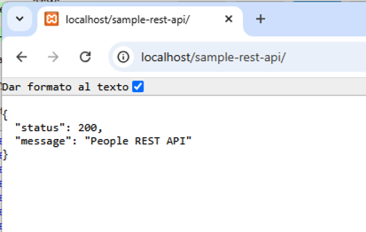
También es posible probar esta ruta con cURL desde la terminal:
curl http://localhost/sample-rest-apiEsto nos devolvería la siguiente respuesta, donde el contenido se encuentra en el campo Content:
curl http://localhost/sample-rest-api
StatusCode : 200
StatusDescription : OK
Content : {"status":200,"message":"People REST API"}
RawContent : HTTP/1.1 200 OK
Content-Length: 42
Content-Type: application/json; charset=utf-8
Date: Fri, 14 Feb 2025 13:16:12 GMT
Server: Apache/2.4.58 (Win64) OpenSSL/3.1.3 PHP/8.2.12
X-Powered-By: PHP/8.2.1...
Forms : {}
Headers : {[Content-Length, 42], [Content-Type, application/json; charset=utf-8], [Date, Fri, 14 Feb 2025
13:16:12 GMT], [Server, Apache/2.4.58 (Win64) OpenSSL/3.1.3 PHP/8.2.12]...}
Images : {}
InputFields : {}
Links : {}
ParsedHtml : mshtml.HTMLDocumentClass
RawContentLength : 42Por último, también es posible probar este endpoint lanzando la petición con Postman. Para ello, basta con elegir el método GET, introducir la URL a la que se dirige la petición (http://localhost/sample-rest-api) y pulsar el botón Send. La respuesta será similar a la que se muestra en la figura siguiente.
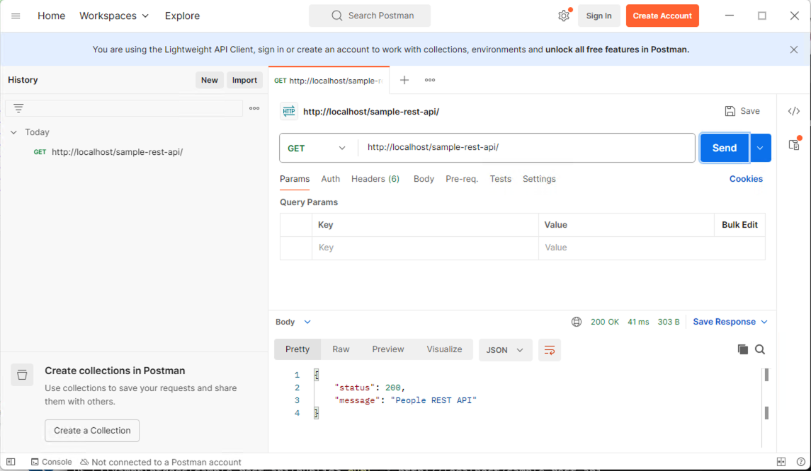
3. Desarrollo básico en PHP
PHP es un lenguaje de programación de propósito general que se adapta especialmente al desarrollo web. Permite la creación de páginas web dinámicas y la interacción con bases de datos, entre otras funcionalidades. En este apartado se explicarán los conceptos básicos de PHP, como variables, operadores, estructuras de control, funciones, arrays, formularios, etc.
3.1. Operaciones básicas
Un archivo en PHP puede contener código PHP y código HTML. El código PHP se encierra entre las etiquetas <?php y ?>, y el código HTML se escribe fuera de estas etiquetas. Al ser PHP un lenguaje interpretado, se ejecutará secuencialmente, línea por línea, y se mostrará el resultado en el navegador. Además, al poder intercalarse código PHP y HTML, se pueden realizar operaciones en PHP y mostrar el resultado en el navegador.
En cuanto a la sintaxis, destacar los siguiente:
-
No es sensible a mayúsculas y minúsculas, por lo que no importa si se escribe en mayúsculas o minúsculas.
-
Las variables en PHP se definen con el símbolo
$seguido del nombre de la variable. No es necesario definir el tipo de la variable, ya que PHP es un lenguaje de tipado dinámico. Tampoco es necesario declarar las variables antes de usarlas. -
Las estructuras de control, como
if,else,while,for, etc., son similares a las de otros lenguajes de programación como Java, C o C++. -
Las funciones en PHP se definen con la palabra clave
functionseguida del nombre de la función y los paréntesis(). Dentro de los paréntesis se pueden definir los parámetros de la función. -
Los comentarios en PHP se pueden realizar de dos formas: con
//para comentarios de una línea y con/* */para comentarios de varias líneas.
A continuación se muestran algunos ejemplos de operaciones básicas en PHP:
<?php
// Operaciones aritméticas
$a = 5;
$b = 10;
$suma = $a + $b;
$resta = $a - $b;
$multiplicacion = $a * $b;
$division = $a / $b;
echo "Suma: " . $suma . "<br>";
echo "Resta: " . $resta . "<br>";
echo "Multiplicación: " . $multiplicacion . "<br>";
echo "División: " . $division . "<br>";
// Concatenación de cadenas
$cadena1 = "Hola";
$cadena2 = "Mundo";
$cadena3 = $cadena1 . " " . $cadena2;
echo $cadena3 . "<br>";
// Estructuras de control
if ($a > $b) {
echo "$a es mayor que $b<br>";
} else {
echo "$a no es mayor que $b<br>";
}
for ($i = 0; $i < 5; $i++) {
echo "El valor de i es: $i<br>";
}
// Funciones
function saludar($nombre) {
return "Hola, " . $nombre . "<br>";
}
echo saludar("María");
?>La figura siguiente muestra el resultado de ejecutar el código PHP anterior en un navegador web.
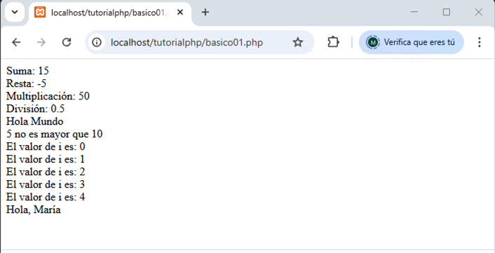
3.2. Control de flujo
El control de flujo en PHP se realiza mediante estructuras de control como if, else, elseif, while, do-while, for, foreach, switch, etc. Estas estructuras de control permiten controlar el flujo de ejecución del programa en función de ciertas condiciones. A continuación se muestran algunos ejemplos de control de flujo en PHP:
<?php
// Estructura if-else
$numero = 10;
if ($numero > 0) {
echo "$numero es positivo<br>";
} else {
echo "$numero es negativo o cero<br>";
}
// Estructura switch
$dia = "lunes";
switch ($dia) {
case "lunes":
echo "Hoy es lunes<br>";
break;
case "martes":
echo "Hoy es martes<br>";
break;
default:
echo "Hoy no es ni lunes ni martes<br>";
}
// Bucle while
$i = 0;
while ($i < 5) {
echo "El valor de i es: $i<br>";
$i++;
}
// Bucle do-while
$j = 0;
do {
echo "El valor de j es: $j<br>";
$j++;
} while ($j < 5);
// Bucle for
for ($k = 0; $k < 5; $k++) {
echo "El valor de k es: $k<br>";
}
// Bucle foreach
$frutas = ["manzana", "naranja", "plátano"];
foreach ($frutas as $fruta) {
echo "Fruta: $fruta<br>";
}
?>La figura siguiente muestra el resultado de ejecutar el código PHP anterior en un navegador web.
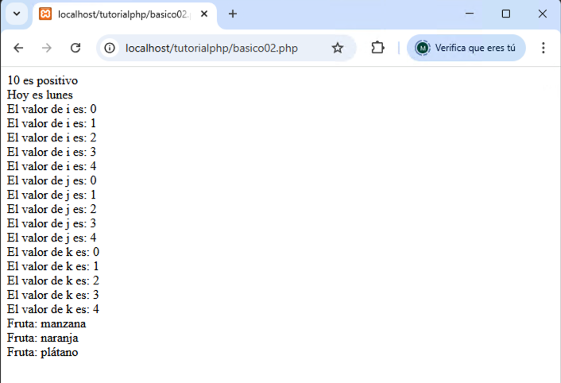
3.3. Funciones
Las funciones en PHP permiten encapsular un bloque de código que puede ser reutilizado en diferentes partes del programa. Las funciones pueden recibir parámetros y devolver valores. A continuación se muestran algunos ejemplos de funciones en PHP:
<?php
// Función sin parámetros
function saludar() {
return "Hola, Mundo!<br>";
}
echo saludar();
// Función con un parámetro
function saludarPersona($nombre) {
return "Hola, " . $nombre . "!<br>";
}
echo saludarPersona("María");
// Función con múltiples parámetros
function sumar($a, $b) {
return $a + $b;
}
echo "La suma de 5 y 10 es: " . sumar(5, 10) . "<br>";
// Función con parámetros por defecto
function saludarConTitulo($nombre, $titulo = "Sr./Sra.") {
return "Hola, " . $titulo . " " . $nombre . "!<br>";
}
echo saludarConTitulo("María");
echo saludarConTitulo("María", "Dra.");
// Función con tipo de retorno
function multiplicar($a, $b): int {
return $a * $b;
}
echo "La multiplicación de 5 y 10 es: " . multiplicar(5, 10) . "<br>";
?>La figura siguiente muestra el resultado de ejecutar el código PHP anterior en un navegador web.
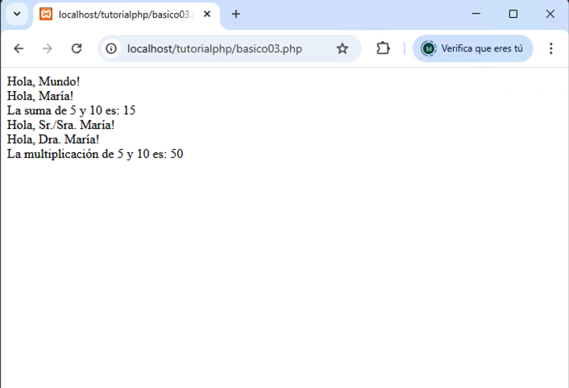
3.4. Funciones de devolución de llamada (callbacks)
Las funciones de devolución de llamada o funciones de callback son funciones que se pasan como argumentos a otras funciones y se ejecutan en un momento posterior. Las funciones de callback son útiles para manejar eventos asíncronos, como métodos de una API, o para aplicar una función a cada elemento de un array. A continuación se muestran algunos ejemplos de funciones de callback en PHP:
<?php
// Función de callback simple
function procesar($callback) {
// Llamar a la función de callback
$callback();
}
function miCallback() {
echo "Hola desde la función de callback!<br>";
}
// Pasar la función de callback como argumento
procesar('miCallback');
// Función de callback con parámetros
function procesarConParametros($callback, $parametro) {
// Llamar a la función de callback con un parámetro
$callback($parametro);
}
function miCallbackConParametros($mensaje) {
echo "Mensaje desde la función de callback: " . $mensaje . "<br>";
}
// Pasar la función de callback con un parámetro
procesarConParametros('miCallbackConParametros', 'Hola, Mundo!');
// Función de callback anónima
procesar(function() {
echo "Hola desde una función de callback anónima!<br>";
});
// Función de callback con array_map
$numeros = [1, 2, 3, 4, 5];
$cuadrados = array_map(function($numero) {
return $numero * $numero;
}, $numeros);
print_r($cuadrados);
?>La figura siguiente muestra el resultado de ejecutar el código PHP anterior en un navegador web.
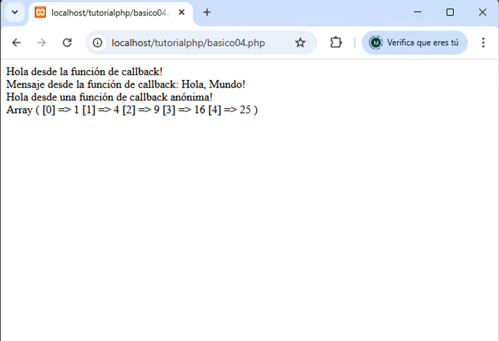
3.5. Uso de arrays
Los arrays en PHP son estructuras de datos que permiten almacenar múltiples valores en una sola variable. Los arrays pueden ser indexados numéricamente o asociativos, a los que se accede mediante un índice o una clave. Los arrays indexados numéricamente utilizan índices numéricos para acceder a los elementos, mientras que los arrays asociativos utilizan claves. Los arrays en PHP son dinámicos, lo que significa que pueden cambiar de tamaño durante la ejecución del programa. Además, los arrays en PHP pueden contener diferentes tipos de datos, como enteros, cadenas, booleanos, etc. A continuación se muestran algunos ejemplos de uso de arrays en PHP:
<?php
// Array indexado numéricamente
$frutas = ["manzana", "naranja", "plátano"];
echo "La primera fruta es: " . $frutas[0] . "<br>";
// Array asociativo
$persona = [
"nombre" => "María",
"edad" => 25,
"ciudad" => "Madrid"
];
echo "El nombre es: " . $persona["nombre"] . "<br>";
// Recorrer un array indexado numéricamente con un bucle for
for ($i = 0; $i < count($frutas); $i++) {
echo "Fruta: " . $frutas[$i] . "<br>";
}
// Recorrer un array asociativo con un bucle foreach
foreach ($persona as $clave => $valor) {
echo "$clave: $valor<br>";
}
// Añadir elementos a un array
$frutas[] = "pera";
echo "La última fruta es: " . $frutas[count($frutas) - 1] . "<br>";
// Eliminar elementos de un array
unset($frutas[1]);
echo "Después de eliminar, la segunda fruta es: " . $frutas[1] . "<br>";
?>La figura siguiente muestra el resultado de ejecutar el código PHP anterior en un navegador web.
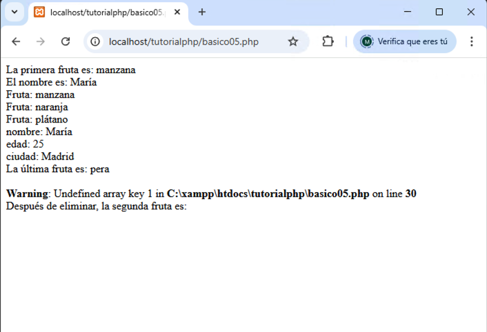
PHP ofrece una gran cantidad de funciones para el manejo de arrays, como count, array_push, array_pop, array_shift, array_unshift, array_slice, array_splice, array_merge, array_keys, array_values, array_filter, array_search, etc. Estas funciones permiten añadir, eliminar, modificar y recorrer los elementos de un array de forma sencilla y eficiente. Veamos un ejemplo de uso de algunas de estas funciones:
-
count: Devuelve el número de elementos de un array.$frutas = ["manzana", "naranja", "plátano"]; echo "El número de frutas es: " . count($frutas) . "<br>"; -
array_map: Aplica una función a cada elemento de un array y devuelve un nuevo array con los resultados.$numeros = [1, 2, 3, 4, 5]; $cuadrados = array_map(function($numero) { return $numero * $numero; }, $numeros); print_r($cuadrados); -
array_shift: Elimina el primer elemento de un array y lo devuelve.$frutas = ["manzana", "naranja", "plátano"]; $fruta = array_shift($frutas); echo "La primera fruta es: " . $fruta . "<br>"; -
array_filter: Filtra los elementos de un array utilizando una función de devolución de llamada.$edades = [25, 30, 35, 40, 45]; $mayoresDe30 = array_filter($edades, function($edad) { return $edad > 30; }); print_r($mayoresDe30);
3.6. Formularios en PHP
Los formularios son una parte fundamental de las aplicaciones web, ya que permiten a los usuarios introducir datos que serán enviados al servidor para su procesamiento. En PHP, los datos de un formulario se envían al servidor a través del método POST o GET. El método POST envía los datos al servidor de forma no visible, mientras que el método GET envía los datos al servidor a través de la URL. En general, se utiliza el método POST para enviar datos sensibles, como contraseñas, y el método GET para enviar datos no sensibles. No obstante, ya veremos más adelante que el método POST es el más utilizado para enviar datos a una API RESTful, como en la petición de creación de un nuevo recurso. A continuación se muestra un ejemplo de URL que envía datos a través del método GET:
http://localhost/procesar.php?nombre=María&edad=25En este caso se envían los datos nombre=María y edad=25 al archivo procesar.php a través del método GET. En PHP, los datos enviados a través del método GET se almacenan en un array asociativo llamado $GET. Por ejemplo, para acceder al valor del parámetro nombre, se puede utilizar $_GET['nombre']. nombre y edad son lo que se conoce como parámetros de consulta (_query params) y se envían al servidor a través de la URL. Los parámetros de consulta son pares clave-valor que se envían al servidor a través de la URL y se utilizan para enviar datos al servidor. En este caso los parámetros de consulta son nombre y edad, y sus valores son María y 25, respectivamente.
A continuación se muestra un ejemplo de un formulario HTML que envía datos a través del método POST. El formulario contiene dos campos, uno para el nombre y otro para la edad. Llamaremos a este formulario formulario.html. Este formulario enviará los datos al archivo procesar.php a través del método POST.
<form action="procesar.php" method="post">
Nombre: <input type="text" name="nombre"><br>
Edad: <input type="text" name="edad"><br>
<input type="submit" value="Enviar">
</form>En este caso los datos del formulario se envían al archivo procesar.php a través del método POST. En PHP, los datos enviados a través del método POST se almacenan en un array asociativo llamado $_POST. Por ejemplo, para acceder al valor del parámetro nombre, se puede utilizar $_POST['nombre'].
A continuación se muestra un ejemplo de cómo procesar los datos enviados por el formulario en PHP. Llamaremos a este archivo procesar.php.
<?php
$nombre = $_POST['nombre'];
$edad = $_POST['edad'];
echo "Nombre: " . $nombre . "<br>";
echo "Edad: " . $edad . "<br>";
?>En este ejemplo se accede a los datos del formulario a través del array $_POST y se muestran en el navegador utilizando la función echo.
|
Si el formulario envía los datos a través del método |
|
Es importante validar y sanitizar los datos recibidos a través de formularios para evitar ataques de inyección de código y otros tipos de ataques. PHP proporciona funciones como |
La figura siguiente ilustra a la izquierda el formulario y a la derecha el resultado de procesar los datos del formulario tras enviarlo.
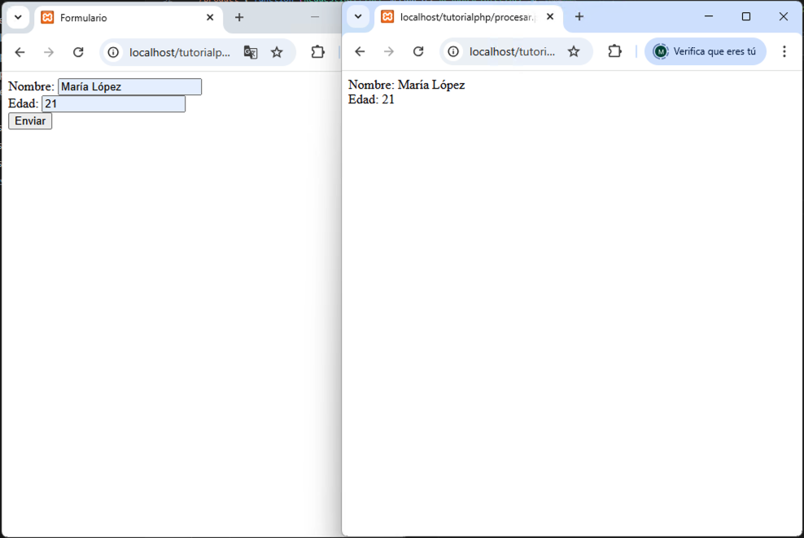
4. Bases del desarrollo de APIs
Una API (Application Programming Interface) es un conjunto de definiciones y protocolos que permiten que diferentes aplicaciones se comuniquen entre sí. Las APIs definen la forma en que los desarrolladores pueden interactuar con una aplicación o servicio, proporcionando un conjunto de funciones y procedimientos que pueden ser utilizados para realizar tareas específicas.
Las APIs funcionan como intermediarios entre diferentes sistemas, permitiendo que una aplicación solicite datos o servicios de otra aplicación y reciba una respuesta. Esto se logra mediante el uso de solicitudes y respuestas HTTP, donde una aplicación envía una solicitud a una API y la API devuelve una respuesta con los datos solicitados.
4.1. API y API REST
Una API REST (Representational State Transfer) es un tipo de API que sigue los principios de la arquitectura REST. REST es un estilo de arquitectura que utiliza HTTP para realizar operaciones CRUD (Create, Read, Update, Delete) en recursos. En nuestro caso, los recursos normalmente serán tablas de una base de datos. Las APIs RESTful son diseñadas para ser simples, escalables y eficientes, utilizando métodos HTTP estándar y formatos de intercambio de datos como JSON y XML.
La principal diferencia entre una API y una API REST es que las APIs RESTful siguen los principios de la arquitectura REST, mientras que otras APIs pueden no seguir estos principios. Las APIs RESTful utilizan métodos HTTP estándar (GET, POST, PUT, DELETE) para realizar operaciones en recursos y utilizan URLs para identificar recursos específicos.
La figura siguiente ilustra las peticiones a una API RESTful utilizando los métodos HTTP estándar GET, POST, PUT y DELETE. Estas peticiones son enviadas a través de URLs que identifican los recursos específicos. Al ser recibidas por la API RESTful, se procesan (interactuando con la base de datos) y se envían las respuestas correspondientes.

4.2. Métodos HTTP (GET, POST, PUT, DELETE)
Los métodos HTTP son utilizados para realizar operaciones en recursos en una API RESTful. Los métodos más comunes y sus principales usos son:
-
GET: Recupera información de un recurso específico. -
POST: Crea un nuevo recurso. -
PUT: Actualiza un recurso existente. -
DELETE: Elimina un recurso.
Cada uno de estos métodos tiene un propósito específico y se utiliza en diferentes situaciones para interactuar con los recursos de una API. Desde el punto de vista de bases de datos, cada uno lo podríamos hacer corresponder con una operación básica de SQL CRUD:
-
GET: Correspondería a una operaciónSELECTpara recuperar información de un recurso específico. -
POST: Correspondería a una operaciónINSERTpara crear un nuevo recurso. -
PUT: Correspondería a una operaciónUPDATEpara actualizar un recurso existente. -
DELETE: Correspondería a una operaciónDELETEpara eliminar un recurso.
4.3. Formatos de intercambio de datos (JSON, XML)
Los formatos de intercambio de datos son utilizados para representar la información que se envía y recibe a través de una API. Los dos formatos más comunes son JSON (JavaScript Object Notation) y XML (eXtensible Markup Language).
-
JSON: Es un formato ligero y fácil de leer que utiliza una sintaxis basada en objetos de JavaScript. Es ampliamente utilizado en APIs RESTful debido a su simplicidad y eficiencia.[ { "id": 1, "name": "Product 1", "price": 10.00 }, { "id": 2, "name": "Product 2", "price": 20.00 } ] -
XML: Es un formato más complejo que utiliza una sintaxis basada en etiquetas. Aunque es más pesado que JSON, es utilizado en algunas APIs debido a su capacidad para representar datos estructurados de manera más detallada.<products> <product> <id>1</id> <name>Product 1</name> <price>10.00</price> </product> <product> <id>2</id> <name>Product 2</name> <price>20.00</price> </product> </products>
4.4. Especificación de los endpoints de una API
Los endpoints de una API son las URLs a las que se envían las solicitudes para interactuar con los recursos de la API. Cada endpoint representa una operación específica que se puede realizar en un recurso. Como ejemplos de endpoints, se pueden mencionar:
-
GET /product: Recupera la lista de todos los productos. -
GET /product/{id}: Recupera la información de un producto específico. -
POST /product: Crea un nuevo producto. El producto se envía en el cuerpo de la solicitud, normalmente en formato JSON o XML.
A continuación se explican algunos aspectos importantes sobre cómo especificar los endpoints de una API.
4.4.1. Paso de parámetros en la URL
Los parámetros en la URL se utilizan para identificar recursos específicos o para pasar información adicional a la API. Los parámetros pueden ser parte de la ruta de la URL o pueden ser parámetros de consulta.
-
Parámetros en la ruta de la URL: Se utilizan para identificar recursos específicos. Por ejemplo, en la URL
http://api.example.com/product/1, el parámetro1identifica al prducto con ID 1. En la especificación de una API, esto se puede representar comoGET /product/{id}, donde se omite el nombre del servidor y sólo se especifica la ruta relativa al servidor. -
Parámetros de consulta: También conocidos como
QueryParams, se utilizan para pasar información adicional a la API. Por ejemplo, en la URLhttp://api.example.com/product?name=Product 1, el parámetro de consultaname=Product 1se utiliza para buscar productos con el nombre "Product 1". En la especificación de una API, esto se puede representar comoGET /product?name=<name>.
4.4.2. Envío de datos en peticiones POST y PUT
En las peticiones POST y PUT, los datos a añadir o a modificar, respectivamente, se envían en el cuerpo de la solicitud (body). Estos datos pueden estar en formato JSON, XML u otros formatos. A continuación se muestra un ejemplo del cuerpo en una petición POST utilizando JSON:
{
"name": "Product 1",
"price": 10.00
}La figura siguiente ilustra cómo especificar este cuerpo en una solicitud POST a través de Postman.
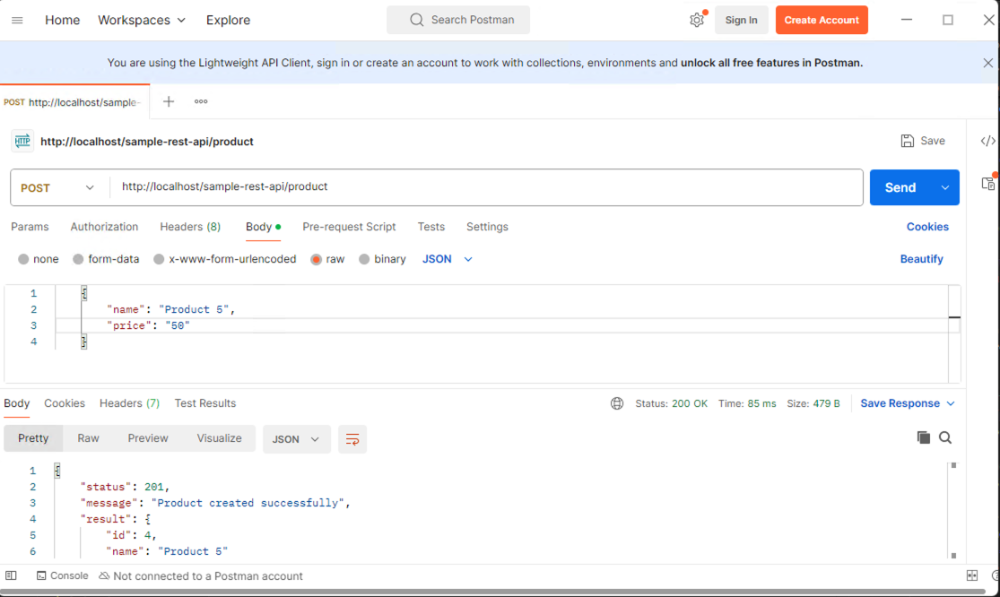
|
La especificación del cuerpo se realiza en la pestaña |
En este ejemplo se envían los datos de un producto en formato JSON en el cuerpo de la solicitud POST. En la especificación de una API, esto se puede representar como POST /product.
En el caso de una petición PUT, se enviarían los datos de la misma forma, pero se utilizaría el método PUT en lugar de POST. En la especificación de una API, esto se puede representar como PUT /product/{id}.
|
Las peticiones |
4.4.3. Respuestas de la API
Las respuestas de una API RESTful pueden ser en formato JSON, XML u otros formatos. Es una buena práctica que las respuestas, además incluyan un código de estado HTTP que indica si la solicitud se ha completado correctamente o si ha habido algún error. Algunos códigos de estado HTTP comunes son:
-
200 OK: La solicitud se ha completado correctamente. -
201 Created: El recurso se ha creado correctamente. Se utiliza en respuestas a peticionesPOST. -
400 Bad Request: La solicitud no se ha podido procesar debido a un error en la solicitud. -
404 Not Found: El recurso solicitado no se ha encontrado. Esto debería entenderse como una llamada a un endpoint que no existe, y no como un recurso que no se ha encontrado (p.e. un producto que no existe). En el caso de solicitar un recurso que no se encuentre, se debería devolver un código200 OKcon un cuerpo vacío.
4.4.4. Ejemplo de endpoints de una API RESTful
A continuación se muestra un ejemplo de cómo se pueden especificar los endpoints básicos de una API RESTful para gestionar productos:
-
GET /product: Recupera la lista de todos los productos. -
GET /product/{id}: Recupera la información de un producto específico. -
POST /product: Crea un nuevo producto. -
PUT /product/{id}: Actualiza la información de un producto específico. -
DELETE /product/{id}: Elimina un producto específico.
En estos endpoints, {id} es un parámetro en la ruta de la URL que identifica al usuario específico.
|
En la especificación de los endpoints de una API normalmente no se incluye el nombre/dirección del servidor, ya que esto se especifica en la configuración del cliente. Sólo se especifica la ruta relativa al servidor. Por ejemplo, en lugar de |
4.5. Cabeceras (Content-Type, Authorization)
Las cabeceras HTTP son utilizadas para proporcionar información adicional sobre la solicitud o la respuesta. Algunas de las cabeceras más comunes son:
-
Content-Type: Especifica el formato de los datos en el cuerpo de la solicitud o la respuesta (p.e.application/jsonpara JSON). -
Authorization: Proporciona credenciales de autenticación para acceder a recursos protegidos (p.e.Bearer tokenpara autenticación basada en tokens).
Las cabeceras son importantes para asegurar que la solicitud y la respuesta sean interpretadas correctamente por el cliente y el servidor.
5. Desarrollo de una API RESTful básica en PHP con Slim Framework
En este apartado se explicará cómo desarrollar una API RESTful en PHP utilizando el microframework Slim. Como se ha comentado anteriormente, Slim es un microframework PHP que permite crear aplicaciones web rápidas y sencillas. En este caso utilizaremos Slim para desarrollar una API RESTful que permita realizar operaciones CRUD (Create, Read, Update, Delete) en una lista de productos. Comenzaremos inicializando un proyecto Slim para pasar posteriormente a la creación de la API. La API la crearemos en dos pasos. Primero, en esta sección crearemos una API REST básica, para familiarizarnos con Slim y los conceptos básicos de una API RESTful. Posteriormente, en la sección siguiente crearemos una API REST que ya sí realice operaciones contra una base de datos.
5.1. Inicialización del proyecto
Para inicializar el proyecto, se deben seguir los siguientes pasos:
-
Crear una carpeta para el proyecto, por ejemplo,
sample-rest-api. -
Añadir un archivo
composer.jsoncon las dependencias necesarias para Slim.{ "name": "mtorres/sample-rest-api", "description": "Sample REST API with Slim Framework", "type": "project", "authors": [ { "name": "Manuel Torres" } ], "license": "CC BY-NC-ND 4.0", "autoload": { "psr-4": { "App\\": "src/" } }, "require": { "php": "^8.1", "slim/slim": "4.*", "nyholm/psr7": "^1.8", (1) "nyholm/psr7-server": "^1.1", "laminas/laminas-diactoros": "^3.3" (2) }, "config": { "process-timeout": 0 } }1 Dependencia para el manejo de mensajes PSR-7. PSR es un estándar de PHP que define interfaces para trabajar con mensajes HTTP. 2 Contiene las implementaciones de PSR-7 para PHP. -
Añadir un archivo
.htaaccessde configuración de Apache en la carpeta raíz del proyecto (sample-rest-api) para redirigir todas las solicitudes a la carpetapublic.RewriteEngine on RewriteRule ^$ public/ [L] RewriteRule (.*) public/$1 [L] -
Añadir una carpeta
publicen la carpeta raíz del proyecto (sample-rest-api). En esta carpetapublicse creará incialmente otro archivo.htaccessde configuración de Apache que redirigirá todas las solicitudes aindex.php. De esta manera,index.phpserá el punto de entrada de la aplicación Slim y en este caso de la API REST.RewriteEngine On RewriteCond %{REQUEST_FILENAME} !-f RewriteCond %{REQUEST_FILENAME} !-d RewriteRule ^ index.php [QSA,L]
5.2. Creación de una API REST básica
Para realizar un aprendizaje progresivo de Slim, se comenzará con una API REST básica que permita realizar operaciones CRUD en una lista de productos, pero sin interactuar con una base de datos. Esto nos permitirá familiarizarnos con Slim y los conceptos básicos de una API RESTful, como los métodos HTTP, los endpoints, los formatos de intercambio de datos, el uso de cabeceras y parámetros, etc. En este caso se simulará una base de datos utilizando un array de productos en memoria. Tal y como comentamos anteriormente, la API tendrá los siguientes endpoints:
-
GET /: Devuelve un mensaje de bienvenida. -
GET /product: Devuelve una lista de productos o filtra productos por nombre. -
GET /product/{id}: Devuelve un producto específico por ID. -
POST /product: Crea un nuevo producto. -
PUT /product/{id}: Actualiza un producto existente por ID. -
DELETE /product/{id}: Elimina un producto existente por ID.
A continuación se detallan los pasos a seguir para crear esta API.
Comenzaremos creando un archivo index.php en la carpeta public con el siguiente contenido:
|
El archivo debe llamarse |
<?php
require dirname(__DIR__) . '/vendor/autoload.php';
use Psr\Http\Message\RequestInterface;
use Psr\Http\Message\ResponseInterface;
use Slim\Factory\AppFactory;
// Crear la aplicación
$app = AppFactory::create();
// Configurar Slim para procesar datos JSON
$app->addBodyParsingMiddleware();En este bloque de código, se crea la aplicación Slim y se configura la ruta base de la API. También se añade un middleware para procesar datos JSON en las solicitudes.
5.3. Función auxiliar para manejar las respuestas
Creamos una función auxiliar para manejar las respuestas en formato JSON:
<?php
// ...existing code...
// Función auxiliar para manejar la respuesta
function createJsonResponse(ResponseInterface $response, array $data): ResponseInterface
{
// Establecer el tipo de contenido de la respuesta
$response = $response->withHeader('Content-Type', 'application/json; charset=utf-8');
// Escribir la respuesta
$response->getBody()->write(json_encode($data));
// Devolver la respuesta
return $response;
}Esta función toma una respuesta (para devolver el contenido de las llamadas a la API) y un array de datos, establece el tipo de contenido a JSON, escribe los datos en el cuerpo de la respuesta y devuelve la respuesta.
5.4. Definición de la lista de productos
A modo de ejemplo, ya que no tenemos una base de datos, definimos una lista global de productos que utilizaremos en los endpoints:
<?php
// ...existing code...
// Definir un array global de productos
$products = [
['id' => 1, 'name' => 'Product 1'],
['id' => 2, 'name' => 'Product 2'],
['id' => 3, 'name' => 'Product 3']
];Este array asociativo simula una base de datos de productos para los propósitos de este tutorial.
5.5. Endpoint básico para devolver un mensaje
Para hacer la primera prueba en la API, comenzaremos creando un endpoint básico que devuelva un mensaje. Se trata de que responda con un JSON sencillo cuando se invoque la URL base de la API (/). En este caso definimos un endpoint básico que devuelve un mensaje (código del ejemplo):
<?php
// ...existing code...
// Ruta de ejemplo para devolver un mensaje - http://localhost/sample-rest-api/
$app->get('/', function (RequestInterface $request, ResponseInterface $response, array $args) { (1)
// Establecer los datos de la respuesta
$data = [
'status' => 200,
'message' => 'Hello from Slim'
];
// Devolver la respuesta utilizando la función auxiliar
return createJsonResponse($response, $data);
});| 1 | En este bloque de código, se define un endpoint que responde a las solicitudes GET en la ruta base (/) con un mensaje JSON. Este bloque de código es lo que se conoce como un controlador de ruta. |
Este endpoint responde a las solicitudes GET en la ruta base (/) con un mensaje JSON. La figura siguiente muestra el resultado de acceder al endpoint básico desde Postman.
|
Si añadimos La figura siguiente muestra el resultado de acceder al endpoint básico en un navegador. 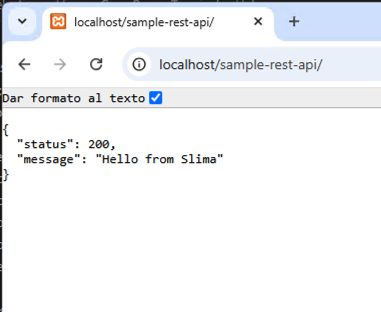 |
5.6. Endpoint para devolver una lista de productos o filtrar productos por nombre
Ahora comenzamos a desarrollar ya realmente lo que son los endpoints de una API RESTful. Comenzamos con un endpoint que devuelve una lista de productos. Inicialmente, se devolverá la lista completa de productos. Posteriormente, se mejorará el endpoint para permitir filtrar los productos por nombre. Definimos inicialmente el endpoint que devuelve una lista de productos. El endpoint responde a las solicitudes GET en la ruta /product y devuelve la lista completa de productos (código del ejemplo)
<?php
// ...existing code...
// Ruta de ejemplo para devolver una lista de productos o filtrar productos por nombre - http://localhost/sample-rest-api/product
$app->get('/product', function (RequestInterface $request, ResponseInterface $response, array $args) {
global $products; (1)
// Establecer los datos de la respuesta
$data = [
'status' => 200,
'result' => $products (2)
];
// Devolver la respuesta utilizando la función auxiliar
return createJsonResponse($response, $data);
});| 1 | Se accede al array global de productos. |
| 2 | Se establecen los datos de la respuesta con el array de productos. |
La figura siguiente muestra el resultado de acceder al endpoint que devuelve una lista de productos en Postman.
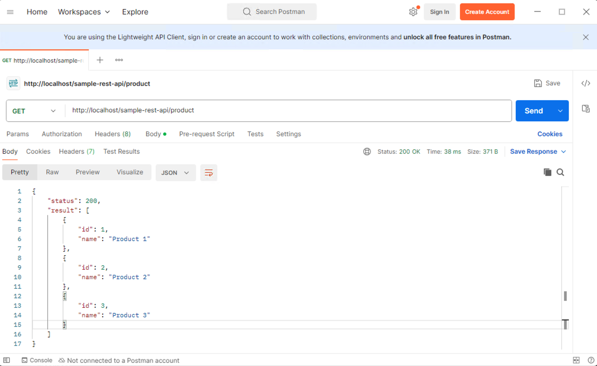
5.7. Endpoint para devolver un producto específico
Continuamos con el desarrollo de la API añadiendo un endpoint que devuelve un producto específico por ID. El endpoint responde a las solicitudes GET en la ruta /product/{id} y devuelve el producto con el ID especificado. El ID especificado en la ruta se obtiene mediante el array $args, un array asociativo que contiene los parámetros de la URL. A continuación se muestra cómo se puede hacer esto (código del ejemplo):
<?php
// ...existing code...
// Ruta de ejemplo para devolver un producto - http://localhost/sample-rest-api/product/1
$app->get('/product/{id}', function (RequestInterface $request, ResponseInterface $response, array $args) {
global $products;
// Obtener el ID del producto
$productId = $args['id']; (1)
// Buscar el producto por ID
$product = array_filter($products, function ($product) use ($productId) {
return $product['id'] == $productId;
});
// Establecer los datos de la respuesta
$data = [
'status' => 200,
'result' => array_shift($product)
];
// Devolver la respuesta utilizando la función auxiliar
return createJsonResponse($response, $data);
});| 1 | Se accede al parámetro de la URL id a través del array $args. La clave de acceso es id porque así se ha definido en la ruta /product/{id}. |
La figura siguiente muestra el resultado de acceder al endpoint que devuelve un producto específico por ID en Postman.
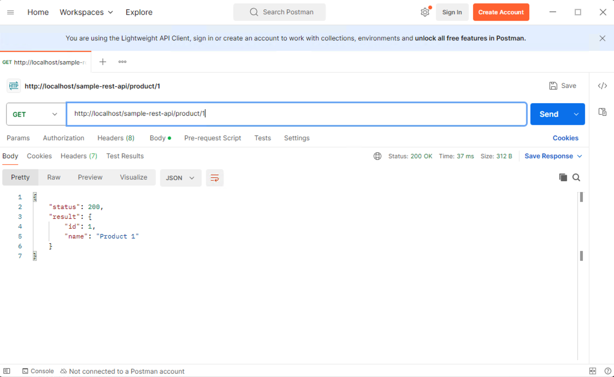
5.8. Endpoint para crear un nuevo producto
Continuamos con el desarrollo de la API añadiendo un endpoint que crea un nuevo producto. Normalmente, la creación de recursos en una API REST se realiza mediante solicitudes POST dirigidas al endpoint raíz del recurso. En este caso el endpoint responde a las solicitudes POST en la ruta /product. Además, la solicitud no incorpora un identificador en la URL, ya que el identificador se generará automáticamente por el servidor. Lo que sí lleva la solicitud son los datos del producto a crear, que se envían en el cuerpo de la solicitud. El servidor recibe la solicitud y crea un nuevo producto con los datos proporcionados en el cuerpo de la solicitud. Como respuesta, lo habitual es devolver el producto creado y un código de estado 201 Created. (Por motivos didácticos la respuesta aquí también incluye la lista completa de productos.) A continuación se muestra cómo se puede hacer esto (código del ejemplo):
<?php
// ...existing code...
// Ruta de ejemplo para crear un producto - http://localhost/sample-rest-api/product
$app->post('/product', function (RequestInterface $request, ResponseInterface $response, array $args) { (1)
global $products;
// Obtener el cuerpo de la solicitud
$body = $request->getParsedBody(); (2)
// Crear un nuevo producto
$newProduct = [
'id' => count($products) + 1,
'name' => $body['name'] (3)
];
// Añadir el nuevo producto al array de productos
$products[] = $newProduct;
// Establecer los datos de la respuesta
$data = [
'status' => 201,
'message' => 'Product created successfully',
'result' => $newProduct,
'products' => $products
];
// Devolver la respuesta utilizando la función auxiliar
return createJsonResponse($response, $data);
});| 1 | El endpoint atiede a peticiones POST en la ruta /product y crea un nuevo producto con los datos proporcionados en el cuerpo de la solicitud. |
| 2 | Se obtienen los datos del cuerpo de la solicitud utilizando el método getParsedBody(), que devuelve un array asociativo con los datos del cuerpo de la solicitud. |
| 3 | Los datos del producto a crear se obtienen del cuerpo de la solicitud a través del array asociativo $body. |
La figura siguiente muestra el resultado de acceder al endpoint que crea un nuevo producto en Postman.
5.9. Endpoint para actualizar un producto existente
Continuamos con el desarrollo de la API añadiendo un endpoint que actualiza un producto existente. Normalmente, la actualización de recursos en una API REST se realiza mediante solicitudes PUT dirigidas a un endpoint específico del recurso indicando el ID del recurso a actualizar. En este caso el endpoint responde a las solicitudes PUT en la ruta /product/{id} y actualiza el producto con el ID especificado con los datos proporcionados en el cuerpo de la solicitud. El servidor recibe la solicitud, busca el producto por ID, actualiza los datos del producto con los datos proporcionados en el cuerpo de la solicitud y devuelve el producto actualizado con un código de estado 200 OK. (Por motivos didácticos la respuesta aquí también incluye la lista completa de productos.) A continuación se muestra cómo se puede hacer esto (código del ejemplo):
<?php
// ...existing code...
// Ruta de ejemplo para actualizar un producto - http://localhost/sample-rest-api/product/1
$app->put('/product/{id}', function (RequestInterface $request, ResponseInterface $response, array $args) { (1)
global $products;
// Obtener el ID del producto
$productId = $args['id']; (2)
// Obtener el cuerpo de la solicitud
$body = $request->getParsedBody(); (3)
// Buscar el producto por ID
$product = array_filter($products, function ($product) use ($productId) {
return $product['id'] == $productId;
});
// Comprobar si el producto existe
if (empty($product)) {
// Establecer los datos de la respuesta
$data = [
'status' => 204,
'message' => 'Product not found'
];
} else {
// Actualizar el producto
$product = array_shift($product);
$product['name'] = $body['name']; (4)
$products[$productId - 1] = $product;
// Establecer los datos de la respuesta
$data = [
'status' => 200,
'message' => 'Product updated successfully',
'result' => $product,
'products' => $products
];
}
// Devolver la respuesta utilizando la función auxiliar
return createJsonResponse($response, $data);
});| 1 | El endpoint atiende a peticiones PUT en la ruta /product/{id} y actualiza el producto con el ID especificado con los datos proporcionados en el cuerpo de la solicitud. |
| 2 | Se accede al parámetro de la URL id a través del array $args. La clave de acceso es id porque así se ha definido en la ruta /product/{id}. |
| 3 | Se obtienen los datos del cuerpo de la solicitud utilizando el método getParsedBody(), que devuelve un array asociativo con los datos del cuerpo de la solicitud. |
| 4 | Los datos del producto a actualizar se obtienen del cuerpo de la solicitud a través del array asociativo $body. |
La figura siguiente muestra el resultado de acceder al endpoint que actualiza un producto existente en Postman.
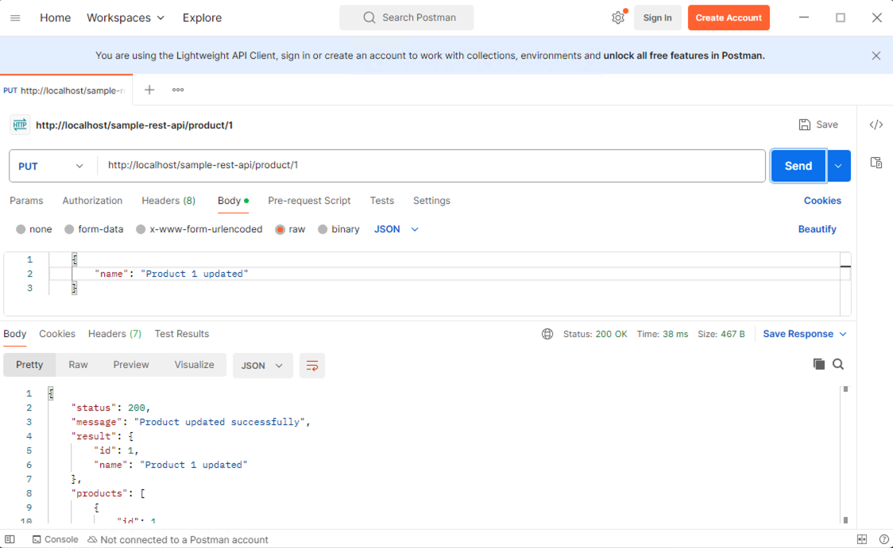
5.10. Endpoint para eliminar un producto
Continuamos con el desarrollo de la API añadiendo un endpoint que elimina un producto. Normalmente, la eliminación de recursos en una API REST se realiza mediante solicitudes DELETE dirigidas a un endpoint específico del recurso indicando el ID del recurso a eliminar. En este caso el endpoint responde a las solicitudes DELETE en la ruta /product/{id} y elimina el producto con el ID especificado. El servidor recibe la solicitud, busca el producto por ID, elimina el producto y devuelve un mensaje con un código de estado 200 OK si el producto se ha eliminado correctamente o un código de estado 204 No Content si el producto no se ha encontrado. (Por motivos didácticos la respuesta aquí también incluye la lista completa de productos.) A continuación se muestra cómo se puede hacer esto (código del ejemplo):
<?php
// ...existing code...
// Ruta de ejemplo para eliminar un producto - http://localhost/sample-rest-api/product/1
$app->delete('/product/{id}', function (RequestInterface $request, ResponseInterface $response, array $args) { (1)
global $products;
// Obtener el ID del producto
$productId = $args['id']; (2)
// Buscar el producto por ID
$product = array_filter($products, function ($product) use ($productId) {
return $product['id'] == $productId;
});
// Comprobar si el producto existe
if (empty($product)) {
// Establecer los datos de la respuesta
$data = [
'status' => 204,
'message' => 'Product not found'
];
} else {
// Eliminar el producto
$product = array_shift($product);
unset($products[$productId - 1]);
// Establecer los datos de la respuesta
$data = [
'status' => 200,
'message' => 'Product deleted successfully',
'result' => $product,
'products' => $products
];
}
// Devolver la respuesta utilizando la función auxiliar
return createJsonResponse($response, $data);
});| 1 | El endpoint atiende a peticiones DELETE en la ruta /product/{id} y elimina el producto con el ID especificado. |
| 2 | Se accede al parámetro de la URL id a través del array $args. La clave de acceso es id porque así se ha definido en la ruta /product/{id}. |
La figura siguiente muestra el resultado de acceder al endpoint que elimina un producto en Postman.
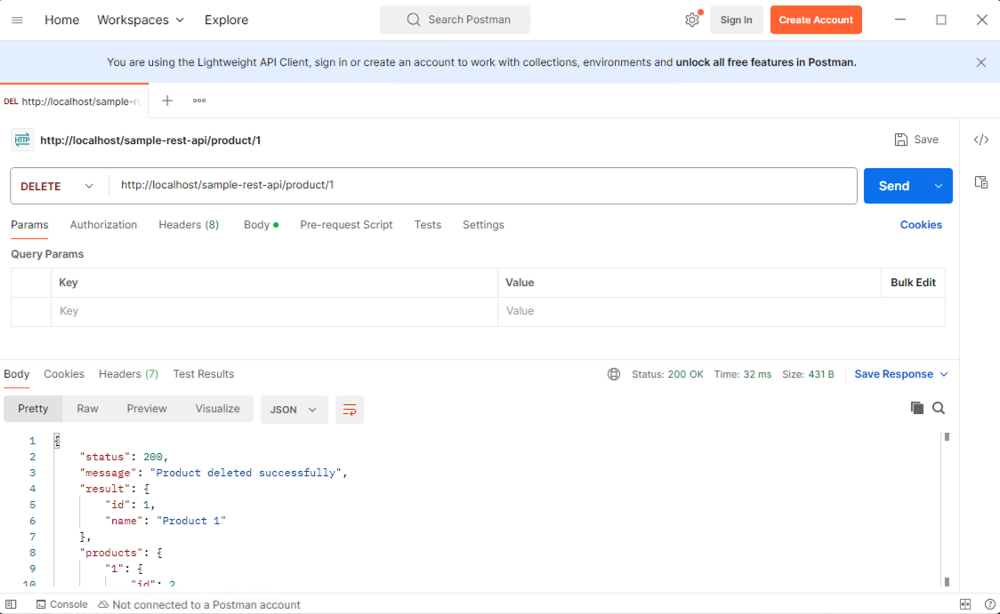
5.11. Incerceptando peticiones a endpoints inexistentes
En Slim, se puede interceptar las peticiones a endpoints inexistentes utilizando un middleware que se ejecuta después de que se hayan procesado todas las rutas. En este caso interceptaremos las peticiones a endpoints inexistentes y devolveremos un mensaje de error con un código de estado 404 Not Found. A continuación se muestra cómo se puede hacer esto (código del ejemplo):
<?php
// ...existing code...
// Interceptar todas las rutas no definidas
$app->any('{routes:.+}', function (RequestInterface $request, ResponseInterface $response) { (1)
$data = [
'status' => 404,
'message' => 'Route not found'
];
return createJsonResponse($response->withStatus(404), $data);
});| 1 | El middleware intercepta todas las rutas que no se han procesado y devuelve un mensaje de error con un código de estado 404 Not Found. |
La figura siguiente muestra el resultado de acceder a un endpoint inexistente en Postman.
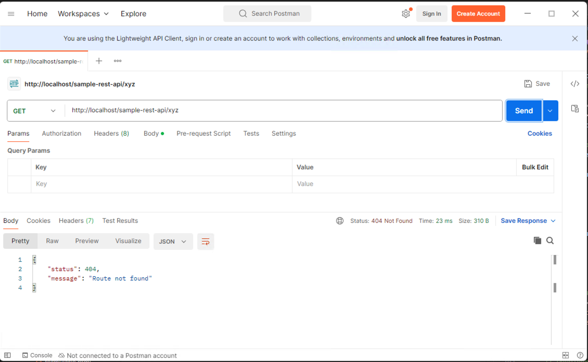
5.12. Ejecutar la aplicación
Finalmente, ejecutamos la aplicación:
<?php
// ...existing code...
// Ejecutar la aplicación
$app->run();Este comando inicia la aplicación Slim y la pone en funcionamiento.
Ahora se pueden probar los endpoints de la API en un navegador o con una herramienta como Postman. La figuras anteriores muestran el resultado de acceder a los diferentes endpoints de la API en Postman.
6. Desarrollo de una API REST con Slim Framework y MySQL
Una vez que conocemos los fundamentos de una API REST y hemos desarrollado una API REST básica con Slim Framework, vamos a dar un paso más y desarrollar una API REST que interactúe con una base de datos MySQL. En este caso utilizaremos una base de datos MySQL para almacenar y gestionar una lista de productos. A continuación se detallan los pasos a seguir para crear esta API.
6.1. mysqli, una extensión de PHP para interactuar con MySQL
Para interactuar con una base de datos MySQL en PHP, utilizaremos la extensión mysqli. mysqli es una extensión de PHP que proporciona una interfaz para interactuar con bases de datos MySQL. Permite realizar operaciones CRUD (Create, Read, Update, Delete) en la base de datos y manejar errores de forma eficiente. A continuación se detallan los pasos a seguir para interactuar con una base de datos MySQL utilizando mysqli y se muestran los objetos y métodos más comunes para realizar operaciones en la base de datos.
|
Para una información más detallada sobre la clase |
-
Conexión a la base de datos: Para conectarse a una base de datos MySQL, se debe crear una instancia de la clase
mysqliy proporcionar la información de conexión, como el nombre de host, el nombre de usuario, la contraseña y el nombre de la base de datos. La conexión queda establecida una vez que se crea la instancia de la clasemysqli. A continuación se muestra un ejemplo de cómo conectarse a una base de datos MySQL utilizandomysqli.$host = 'localhost'; $dbname = 'sample_api'; $username = 'root'; $password = ''; $mysqli = new mysqli($host, $username, $password, $dbname); if ($mysqli->connect_error) { die('Connection failed: ' . $mysqli->connect_error); }En este ejemplo se crea una conexión a una base de datos MySQL llamada
sample_apien el hostlocalhostutilizando el nombre de usuariorooty sin contraseña. Si la conexión falla, se muestra un mensaje de error. -
Consultas a la base de datos: Una vez establecida la conexión a la base de datos, se pueden realizar consultas para recuperar, insertar, actualizar o eliminar datos. Las consultas se realizan utilizando el método
mysqli::query.$query = 'SELECT * FROM product'; $result = $mysqli->query($query); if ($result->num_rows > 0) { while ($row = $result->fetch_assoc()) { // Procesar los datos } }En este ejemplo se realiza una consulta para recuperar todos los productos de la tabla
product. Si se encuentran productos, se procesan los datos utilizando el métodomysqli_result::fetch_assoc.mysql_querypermite la ejecución de consultas SQL en la base de datos. Si la consulta SQL es unSELECT,mysql_querydevolverá un recurso de resultado que puede ser utilizado para recuperar los datos de la consulta. En cambio, si la consulta SQL es unINSERT,UPDATEoDELETE,mysql_querydevolverátrueofalsedependiendo del éxito de la operación. -
Recuperación de datos: Una vez realizada la consulta, se pueden recuperar los datos utilizando métodos como
mysqli_result::fetch_assoc,mysqli_result::fetch_rowomysqli_result::fetch_array. Estos métodos permiten obtener los datos de la consulta en forma de array asociativo, array indexado o array combinado, respectivamente. A continuación se muestra un ejemplo de cómo recuperar los datos de una consulta utilizandomysqli_result::fetch_assoc.while ($row = $result->fetch_assoc()) { echo 'ID: ' . $row['id'] . ', Name: ' . $row['name']; }En este ejemplo se recorren los resultados de la consulta y se muestran los campos
idynamede cada fila. -
Inserción de datos: Para insertar datos en la base de datos, se puede utilizar el método
mysqli::querycon una consulta SQL de inserción. A continuación se muestra un ejemplo de cómo insertar un nuevo producto en la tablaproduct.$name = 'Product 1'; $price = 10.99; $query = "INSERT INTO product (name, price) VALUES ('$name', $price)"; if ($mysqli->query($query) === TRUE) { echo 'Producto insertado correctamente'; } else { echo 'Error al insertar el producto: ' . $mysqli->error; }En este ejemplo se inserta un nuevo producto con el nombre
Product 1y el precio10.99en la tablaproduct. Si la inserción es correcta, se muestra un mensaje de éxito. En caso de error, se muestra un mensaje de error con la descripción del error. -
La actualización y la eliminación de datos se realizan de forma similar a la inserción de datos. Para actualizar datos se utiliza una consulta SQL de actualización (
UPDATE) con el métodomysqli::query. Para eliminar datos se utiliza una consulta SQL de eliminación (DELETE) con el métodomysqli::query.
6.2. Configuración de la base de datos
Una vez que conocemos los principales objetos y métodos de la extensión mysqli para interactuar con una base de datos MySQL, y cómo evitar la inyección de SQL, vamos a configurar la base de datos para la API REST con Slim y MySQL. A continuación se detallan los pasos a seguir para configurar la base de datos (sample_api.sql):
-
Establecer la codificación de caracteres a
utf8mb4para garantizar la compatibilidad con caracteres especiales.SET NAMES utf8mb4; -
Crear una base de datos MySQL llamada
sample_api.CREATE DATABASE IF NOT EXISTS sample_api; -
Crear una tabla
producten la base de datossample_apicon los siguientes campos:-
id: Identificador único del producto (clave primaria). -
name: Nombre del producto. -
price: Precio del producto. -
created_at: Fecha de creación del producto. -
updated_at: Fecha de actualización del producto.CREATE TABLE IF NOT EXISTS product ( id INT AUTO_INCREMENT PRIMARY KEY, name VARCHAR(255) NOT NULL, price DECIMAL(10, 2) NOT NULL, created_at TIMESTAMP DEFAULT CURRENT_TIMESTAMP, updated_at TIMESTAMP DEFAULT CURRENT_TIMESTAMP ON UPDATE CURRENT_TIMESTAMP );
-
-
Añadir algunos productos a la tabla
productpara probar la API.INSERT INTO product (name, price) VALUES ('Product 1', 10.99); INSERT INTO product (name, price) VALUES ('Product 2', 20.99); INSERT INTO product (name, price) VALUES ('Product 3', 30.99);
6.3. Creación de la estructura del proyecto
Para facilitar el desarrollo y el mantenimiento del proyecto se recomienda seguir una estructura en la que estén separados los bloques de código de los modelos, controladores y rutas. Los modelos son responsables de interactuar con la base de datos y definir la estructura de los datos. Los controladores son responsables de manejar la lógica de negocio y las rutas son responsables de definir las URL y los métodos HTTP que se utilizarán para acceder a los recursos.
Organizaremos el código principalmente de esta forma: en la carpeta raíz dejaremos los archivos de configuración y conexión a la base de datos. En la raíz habrá una carpeta src que contendrá el código de la API con los controladores, modelos, rutas y funciones auxiliares, todos ellos organizados en carpetas. En la raíz también habrá otra carpeta public que contendrá el archivo index.php y los archivos estáticos (CSS, JavaScript, imágenes, etc.). La estructura del proyecto quedará de la siguiente manera:
sample-rest-api/
├── composer.json
├── .htaccess
├── config.php
├── db.php
├── public/
| ├── .htaccess
│ └── index.php
├── src/
│ ├── controllers/
│ │ └── ProductController.php
│ ├── models/
│ │ └── Product.php
│ ├── helpers/
│ │ └── helpers.php
│ └── routes/
│ └── product.php6.4. Creación de una API REST con Slim y MySQL
Este apartado lo vamos a dividir en dos. El primero está dedicado a configurar las bases de la API, como son archivos de configuración, conexión a la base de datos, estructura del proyecto y endpoints básicos. En el segundo se desarrollará la API REST con Slim y MySQL.
6.4.1. Configuración de la API
A continuación se detallan los pasos a seguir para crear una API REST con Slim y MySQL:
-
Crear un archivo
config.phpen la carpeta raíz del proyecto (sample-rest-api) con la configuración de la base de datos:-
host: Nombre del host de la base de datos. -
username: Nombre de usuario de la base de datos. -
password: Contraseña de la base de datos. -
database: Nombre de la base de datos.<?php $config = [ 'host' => 'localhost', 'username' => 'root', 'password' => '', 'database' => 'sample_api' ]; return $config;
-
-
Crear un archivo
db.phpen la carpeta raíz del proyecto (sample-rest-api) que establezca la conexión a la base de datos MySQL y devuelva la conexión:<?php require 'config.php'; (1) // Configuración de la base de datos $host = $config['host']; $username = $config['username']; $password = $config['password']; $database = $config['database']; // Conexión a la base de datos $mysqli = new mysqli($host, $username, $password, $database); (2) // Comprobar la conexión if ($mysqli->connect_error) { die('Error de conexión: ' . $mysqli->connect_error); } return $mysqli;1 Importar la configuración de la base de datos del archivo config.php.2 Establecer la conexión a la base de datos MySQL y devolver la conexión para que pueda ser utilizada en otros archivos. En este archivo, se importa la configuración de la base de datos del archivo
config.php, se establece la conexión a la base de datos MySQL y se devuelve la conexión para que pueda ser utilizada en otros archivos. -
Crear la estructura de carpetas
-
Crear una carpeta
srcen la raíz del proyecto (sample-rest-api) que contendrá el código de la API. -
Dentro de la carpeta
src, crear las siguientes carpetas: -
controllers: Contendrá los controladores de la API. -
models: Contendrá los modelos de la API. -
helpers: Contendrá las funciones auxiliares de la API. -
routes: Contendrá las rutas de la API. -
Crear una carpeta
publicen la raíz del proyecto (sample-rest-api) que contendrá el archivoindex.phpy los archivos estáticos (CSS, JavaScript, imágenes, etc.).
-
-
Creación de los archivos
.htaccess-
Crear un archivo
.htaccessen la raíz del proyecto (sample-rest-api) con la configuración de reescritura de URL para redirigir todas las solicitudes a la carpetapublic: +
RewriteEngine on RewriteRule ^$ public/ [L] RewriteRule (.*) public/$1 [L]
-
Crear un archivo
.htaccessen la carpetapubliccon la configuración de reescritura de URL para redirigir todas las solicitudes aindex.php: +
RewriteEngine On RewriteCond %{REQUEST_FILENAME} !-f RewriteCond %{REQUEST_FILENAME} !-d RewriteRule ^ index.php [QSA,L] -
-
Creación del archivos de utilidades
-
Crear un archivo
helpers.phpen la carpetasrc/helperscon las funciones auxiliares que se utilizarán en la API. En este caso, la función auxiliarcreateJsonResponsese utiliza para crear una respuesta JSON con el código de estado y los datos proporcionados.<?php use Psr\Http\Message\ResponseInterface; // Helper function to handle the response function createJsonResponse(ResponseInterface $response, array $data): ResponseInterface { // Set the response content type $response = $response->withHeader('Content-Type', 'application/json; charset=utf-8'); // Write the response $response->getBody()->write(json_encode($data)); // Return the response return $response; }
-
-
Creación del archivo de rutas genéricas. Contiene una ruta para mostrar la documentación de la API, otra con un endpoint de test y otra para interceptar todas las rutas no definidas.
-
Crear un archivo
generalRoutes.phpen la carpetasrc/routescon la configuración de las rutas de la API. En este caso, se define una ruta de prueba/testque devuelve un mensaje de éxito y otra ruta que intercepta todas las rutas no definidas y devuelve un mensaje de error con un código de estado404 Not Found.<?php use Psr\Http\Message\RequestInterface; use Psr\Http\Message\ResponseInterface; require_once dirname(__DIR__) . '/helpers/helpers.php'; // Rutas de documentación (1) $app->get('/[docs]', function (RequestInterface $request, ResponseInterface $response) { // Cargar el archivo de documentación disponible en src/docs/api-docs.html $filePath = __DIR__ . '/../docs/api-docs.html'; if (file_exists($filePath)) { $response->getBody()->write(file_get_contents($filePath)); return $response->withHeader('Content-Type', 'text/html; charset=utf-8'); } else { return createJsonResponse($response->withStatus(404), [ 'status' => 404, 'message' => 'Documentation not found' ]); } }); // Ruta test (2) $app->get('/test', function (RequestInterface $request, ResponseInterface $response, array $args) { $data = ['status' => 200, 'message' => 'Test route']; return createJsonResponse($response, $data); }); // Interceptar todas las rutas no definidas (3) $app->any('{routes:.+}', function (RequestInterface $request, ResponseInterface $response) { $data = [ 'status' => 404, 'message' => 'Route not found' ]; return createJsonResponse($response->withStatus(404), $data); });1 Las rutas /y/docsdevuelven el archivo de documentación de la API. Esta ruta se utiliza para mostrar la documentación de la API y se puede acceder a ella a través del navegador o utilizando una herramienta como Postman.2 La ruta /testdevuelve un mensaje de éxito con el código de estado200 OK. Esta ruta se utiliza para probar la API y asegurarse de que está funcionando correctamente.3 La ruta que intercepta todas las rutas no definidas devuelve un mensaje de error con el código de estado 404 Not Found. Esta ruta se utiliza para manejar las solicitudes a rutas que no están definidas en la API.
-
-
Creación del archivo de documentación de la API
-
Crear un archivo
api-docs.htmlen la carpetasrc/docscon la documentación de la API. En este caso, se incluye una descripción de la API y ejemplos de las rutas disponibles.
-
-
Creación del archivo
index.phpen la carpetapublic-
Crear un archivo
index.phpen la carpetapubliccon la configuración de la API. En este caso, se carga el autoload de Composer, se carga el archivo de configuración de la base de datos y se definen las rutas de la API. Por ahora, sólo se carga el archivo de rutasgeneralRoutes.phpque contiene la ruta de prueba y la ruta que intercepta todas las rutas no definidas.<?php require dirname(__DIR__) . '/vendor/autoload.php'; require dirname(__DIR__) . '/db.php'; (1) use Slim\Factory\AppFactory; // Crear la aplicación $app = AppFactory::create(); // Configurar Slim para procesar datos JSON $app->addBodyParsingMiddleware(); // Cargar las rutas desde un archivo separado (2) require dirname(__DIR__) . '/src/routes/generalRoutes.php'; // Ejecutar la aplicación (3) $app->run();1 Cargar el archivo de configuración de la base de datos para establecer la conexión a la base de datos MySQL. 2 Cargar las rutas desde un archivo separado. En este caso, se carga el archivo generalRoutes.phpque contiene la ruta de prueba y la ruta que intercepta todas las rutas no definidas.3 Ejecutar la aplicación Slim para iniciar el servidor y procesar las solicitudes.
-
Llegados a este punto, podríamos probar la API accediendo a la ruta de prueba /test en el navegador o utilizando una herramienta como Postman. La API debería devolver un mensaje de éxito con el código de estado 200 OK.
{
"status": 200,
"message": "Test route"
}Si se accede a una ruta no definida (p.e. /foo), la API debería devolver un mensaje de error con el código de estado 404 Not Found.
{
"status": 404,
"message": "Route not found"
}La documentación de la API se puede acceder a través de las rutas /´ y `/docs. La figura siguiente muestra la documentación de la API en el navegador.
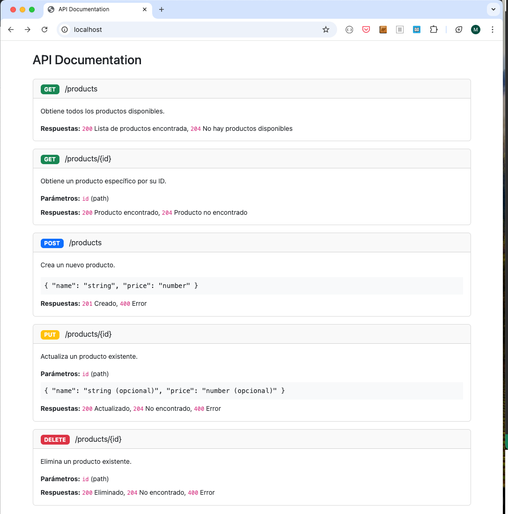
6.4.2. Desarrollo de la API REST
Una vez que hemos configurado la API y hemos creado la ruta de prueba, vamos a desarrollar la API REST con Slim y MySQL. Se trata de una API REST para gestión de productos. La API permite realizar operaciones CRUD (Create, Read, Update, Delete) sobre los productos. Como sólo hay un tipo de objetos, los productos, crearemos un archivo de modelo, un archivo de controlador y un archivo de rutas para los productos. A continuación se detallan los pasos a seguir para crear la API REST con Slim y MySQL:
Creación del modelo Product
El modelo Product representa un producto en la base de datos. Define la estructura de los datos del producto y proporciona métodos de interés, como un método toArray para convertir el objeto Product en un array asociativo. Este método se utiliza para devolver los datos del producto en la respuesta JSON de la API. Para crearlo, se creará un archivo Product.php en la carpeta src/models con la definición del modelo Product.
<?php
namespace App\Models;
class Product
{
private $id;
private $name;
private $price;
private $created_at;
private $updated_at;
public function __construct($id, $name, $price, $created_at = null, $updated_at = null)
{
$this->id = $id;
$this->name = $name;
$this->price = $price;
$this->created_at = $created_at;
$this->updated_at = $updated_at;
}
// Method to convert object to array
public function toArray()
{
return [
'id' => $this->id,
'name' => $this->name,
'price' => $this->price,
'created_at' => $this->created_at,
'updated_at' => $this->updated_at
];
}
}El modelo Product tiene los siguientes atributos:
* id: Identificador único del producto.
* name: Nombre del producto.
* price: Precio del producto.
* created_at: Fecha de creación del producto.
* updated_at: Fecha de actualización del producto.
El constructor del modelo Product recibe los valores de los atributos y los asigna a las propiedades del objeto. El método toArray convierte el objeto Product en un array asociativo que se utiliza para devolver los datos del producto en la respuesta JSON de la API.
Creación del controlador ProductController
El controlador ProductController es responsable de manejar la lógica de negocio de la API. Define los métodos para manejar las operaciones CRUD (Create, Read, Update, Delete) de los productos. Cada método se encarga de procesar la solicitud, interactuar con la base de datos y devolver la respuesta JSON correspondiente. Para crearlo, se creará un archivo ProductController.php en la carpeta src/controllers con la definición del controlador ProductController. A comtinuación se van desarrollando progresivamente los métodos del controlador ProductController para manejar las operaciones CRUD de los productos.
Comenzamos con la implementación del controlador ProductController y la definición de los métodos para manejar las operaciones CRUD de los productos. En este caso, se definen los métodos getAllProducts, getProductById, createProduct, updateProduct y deleteProduct. Estos métodos se encargarán de procesar las solicitudes y devolver las respuestas JSON correspondientes. Todos los métodos pertenecen a la clase ProductController y utilizan la conexión a la base de datos establecida en el archivo db.php. A continuación se muestra el código del controlador ProductController con la definición de los métodos para manejar las operaciones CRUD de los productos:
<?php
namespace App\Controllers;
use Psr\Http\Message\RequestInterface;
use Psr\Http\Message\ResponseInterface;
use App\Models\Product;
require_once dirname(__DIR__) . '/helpers/helpers.php';
require_once dirname(__DIR__) . '/models/Product.php';
class ProductController
{
private $mysqli;
public function __construct($mysqli)
{
$this->mysqli = $mysqli;
}
public function getAllProducts(RequestInterface $request, ResponseInterface $response, array $args)
{
// TBD: Implementar la lógica para obtener todos los productos de la base de datos
}
public function getProductById(RequestInterface $request, ResponseInterface $response, array $args)
{
// TBD: Implementar la lógica para obtener un producto por ID de la base de datos
}
public function createProduct(RequestInterface $request, ResponseInterface $response, array $args)
{
// TBD: Implementar la lógica para crear un nuevo producto en la base de datos
}
public function updateProduct(RequestInterface $request, ResponseInterface $response, array $args)
{
// TBD: Implementar la lógica para actualizar un producto existente en la base de datos
}
public function deleteProduct(RequestInterface $request, ResponseInterface $response, array $args)
{
// TBD: Implementar la lógica para eliminar un producto de la base de datos
}
}Para cada uno de los métodos del controlador ProductController se implementará la lógica para manejar las operaciones CRUD de los productos. A continuación se va mostrando uno a uno los métodos del controlador ProductController con la implementación de la lógica para manejar las operaciones CRUD de los productos.
Método getAllProducts
El método getAllProducts se encarga de obtener todos los productos de la base de datos. Realiza una consulta SQL para recuperar todos los productos y devuelve la lista de productos en formato JSON. A continuación se muestra el código del método getAllProducts:
public function getAllProducts(RequestInterface $request, ResponseInterface $response, array $args)
{
// Consulta para obtener todos los productos
$query = 'SELECT * FROM product';
$stmt = $this->mysqli->prepare($query);
$stmt->execute();
$result = $stmt->get_result();
// Comprobar si hay productos
if ($result->num_rows > 0) {
$products = [];
while ($row = $result->fetch_assoc()) {
$product = new Product($row['id'], $row['name'], $row['price'], $row['created_at'], $row['updated_at']);
$products[] = $product->toArray();
}
// Establecer los datos de la respuesta
return createJsonResponse($response, [
'status' => 200,
'result' => $products
]);
} else {
// Establecer los datos de la respuesta
return createJsonResponse($response, [
'status' => 204,
'message' => 'No products found'
]);
}
}En este método se realiza una consulta SQL para obtener todos los productos de la tabla product. Si se encuentran productos, se recorren los resultados y se crean objetos Product para cada producto. Luego, se convierten los objetos Product en arrays asociativos utilizando el método toArray y se devuelven en la respuesta JSON. Si no se encuentran productos, se devuelve un mensaje de error con el código de estado 404 Not Found.
El método usa los siguientes métodos de la clase mysqli:
-
mysqli::prepare: Para preparar la consulta SQL. -
mysqli_stmt::execute: Para ejecutar la consulta preparada. -
mysqli_stmt::get_result: Para obtener el resultado de la consulta preparada. -
mysqli_result::num_rows: Para comprobar si se encontraron productos en la consulta. -
mysqli_result::fetch_assoc: Para obtener las filas del resultado como arrays asociativos.
Método getProductById
El método getProductById se encarga de obtener un producto por su ID. Realiza una consulta SQL para recuperar el producto con el ID especificado y devuelve el producto en formato JSON. A continuación se muestra el código del método getProductById:
public function getProductById(RequestInterface $request, ResponseInterface $response, array $args)
{
// Obtener el ID del producto
$productId = $args['id'];
// Consulta para obtener un producto por ID
$query = "SELECT * FROM product WHERE id = ?";
$stmt = $this->mysqli->prepare($query);
$stmt->bind_param('i', $productId);
$stmt->execute();
$result = $stmt->get_result();
// Comprobar si hay un producto
if ($result->num_rows > 0) {
$row = $result->fetch_assoc();
$product = new Product($row['id'], $row['name'], $row['price'], $row['created_at'], $row['updated_at']);
// Establecer los datos de la respuesta
return createJsonResponse($response, [
'status' => 200,
'result' => $product->toArray()
]);
} else {
// Establecer los datos de la respuesta
return createJsonResponse($response, [
'status' => 204,
'message' => 'Product not found'
]);
}
// Devolver la respuesta utilizando la función auxiliar
return createJsonResponse($response, $data);
}En este método se realiza una consulta SQL para obtener el producto con el ID especificado. Se utiliza una consulta preparada para evitar la inyección de SQL. Si se encuentra el producto, se crea un objeto Product y se devuelve en la respuesta JSON. Si no se encuentra el producto, se devuelve un mensaje de error con el código de estado 404 Not Found. La obtención del ID se realiza a partir de los argumentos de la solicitud.
El método usa los siguientes métodos de la clase mysqli:
-
mysqli::prepare: Para preparar la consulta SQL con un marcador de posición?para el ID del producto. -
mysqli_stmt::bind_param: Para enlazar el ID del producto a la consulta preparada. -
mysqli_stmt::execute: Para ejecutar la consulta preparada. -
mysqli_stmt::get_result: Para obtener el resultado de la consulta preparada. -
mysqli_result::num_rows: Para comprobar si se encontró el producto en la consulta. -
mysqli_result::fetch_assoc: Para obtener la fila del resultado como un array asociativo.
Método createProduct
El método createProduct se encarga de crear un nuevo producto en la base de datos. Recibe los datos del producto en el cuerpo de la solicitud y realiza una consulta SQL para insertar el nuevo producto en la tabla product. A continuación se muestra el código del método createProduct:
public function createProduct(RequestInterface $request, ResponseInterface $response, array $args)
{
// Obtener el cuerpo de la solicitud
$body = $request->getParsedBody();
// Crear un nuevo producto
$name = $body['name'];
$price = $body['price'];
$createdAt = date('Y-m-d H:i:s');
$updatedAt = date('Y-m-d H:i:s');
// Consulta para crear un nuevo producto
$query = "INSERT INTO product (name, price, created_at, updated_at) VALUES (?, ?, ?, ?)";
$stmt = $this->mysqli->prepare($query);
$stmt->bind_param('sdss', $name, $price, $createdAt, $updatedAt);
$result = $stmt->execute();
// Comprobar si se ha creado el producto
if ($result) {
// Obtener el ID del producto creado
$productId = $this->mysqli->insert_id;
// Devolver el producto creado
return createJsonResponse($response, [
'status' => 201,
'message' => 'Product created successfully',
'result' => [
'id' => $productId,
'name' => $name,
'price' => $price,
'created_at' => $createdAt,
'updated_at' => $updatedAt
]
]);
} else {
// Establecer los datos de la respuesta
return createJsonResponse($response, [
'status' => 400,
'message' => 'Error creating product'
]);
}
}En este método se obtiene el cuerpo de la solicitud y se extraen los datos del nuevo producto. Se utiliza una consulta preparada para insertar el nuevo producto en la tabla product. Si se crea el producto con éxito, se devuelve un mensaje de éxito con el código de estado 201 Created y los datos del producto creado. Si ocurre un error al crear el producto, se devuelve un mensaje de error con el código de estado 400 Bad Request.
El método usa los siguientes métodos de la clase mysqli:
-
mysqli::prepare: Para preparar la consulta SQL con marcadores de posición?para los datos del producto. -
mysqli_stmt::bind_param: Para enlazar los datos del producto a la consulta preparada. -
mysqli_stmt::execute: Para ejecutar la consulta preparada. -
mysqli::insert_id: Para obtener el ID del producto creado.
Método updateProduct
El método updateProduct se encarga de actualizar un producto existente en la base de datos. Recibe el ID del producto en la URL y los datos del producto en el cuerpo de la solicitud. Realiza una consulta SQL para actualizar el producto en la tabla product. A continuación se muestra el código del método updateProduct:
public function updateProduct(RequestInterface $request, ResponseInterface $response, array $args)
{
// Obtener el ID del producto
$productId = $args['id'];
// Obtener el cuerpo de la solicitud
$body = $request->getParsedBody();
// Comprobar si el producto existe
$query = "SELECT * FROM product WHERE id = ?";
$stmt = $this->mysqli->prepare($query);
$stmt->bind_param('i', $productId);
$stmt->execute();
$result = $stmt->get_result();
if ($result->num_rows > 0) {
// Actualizar el producto
// Asignar $name y $price si existen, de lo contrario asignar NULL
$name = isset($body['name']) ? $body['name'] : NULL;
$price = isset($body['price']) ? $body['price'] : NULL;
$updatedAt = date('Y-m-d H:i:s');
// Update the product. COALESCE is used to keep the existing value if the new value is NULL
$query = "UPDATE product SET name = COALESCE(?, name), price = COALESCE(?, price), updated_at = ? WHERE id = ?";
$stmt = $this->mysqli->prepare($query);
$stmt->bind_param('sdsi', $name, $price, $updatedAt, $productId);
$result = $stmt->execute();
// Comprobar si se ha actualizado el producto
if ($result) {
// Consulta para obtener el producto actualizado
$query = "SELECT * FROM product WHERE id = ?";
$stmt = $this->mysqli->prepare($query);
$stmt->bind_param('i', $productId);
$stmt->execute();
$result = $stmt->get_result();
$row = $result->fetch_assoc();
$product = new Product($row['id'], $row['name'], $row['price'], $row['created_at'], $row['updated_at']);
// Devolver el producto actualizado
return createJsonResponse($response, [
'status' => 200,
'message' => 'Product updated successfully',
'result' => $product->toArray()
]);
} else {
// Establecer los datos de la respuesta
return createJsonResponse($response, [
'status' => 400,
'message' => 'Error updating product'
]);
}
} else {
// Establecer los datos de la respuesta
return createJsonResponse($response, [
'status' => 204,
'message' => 'Product not found'
]);
}
}En este método se obtiene el ID del producto de la URL y se comprueba si el producto existe en la base de datos. Si el producto existe, se actualizan los datos del producto utilizando una consulta preparada. Se utiliza la función COALESCE para mantener el valor existente si el nuevo valor es NULL. Si se actualiza el producto con éxito, se devuelve un mensaje de éxito con el código de estado 200 OK y los datos del producto actualizado. Si ocurre un error al actualizar el producto, se devuelve un mensaje de error con el código de estado 400 Bad Request. Si no se encuentra el producto, se devuelve un mensaje de error con el código de estado 404 Not Found.
El método usa los siguientes métodos de la clase mysqli:
-
mysqli::prepare: Para preparar la consulta SQL con marcadores de posición?para los datos del producto. -
mysqli_stmt::bind_param: Para enlazar los datos del producto a la consulta preparada. -
mysqli_stmt::execute: Para ejecutar la consulta preparada. -
mysqli_stmt::get_result: Para obtener el resultado de la consulta preparada. -
mysqli_result::num_rows: Para comprobar si se encontró el producto en la consulta. -
mysqli_result::fetch_assoc: Para obtener la fila del resultado como un array asociativo.
Método deleteProduct
El método deleteProduct se encarga de eliminar un producto de la base de datos. Recibe el ID del producto en la URL y realiza una consulta SQL para eliminar el producto de la tabla product. A continuación se muestra el código del método deleteProduct:
public function deleteProduct(RequestInterface $request, ResponseInterface $response, array $args)
{
// Obtener el ID del producto
$productId = $args['id'];
// Comprobar si el producto existe
$query = "SELECT * FROM product WHERE id = ?";
$stmt = $this->mysqli->prepare($query);
$stmt->bind_param('i', $productId);
$stmt->execute();
$result = $stmt->get_result();
if ($result->num_rows > 0) {
// Eliminar el producto
$query = "DELETE FROM product WHERE id = ?";
$stmt = $this->mysqli->prepare($query);
$stmt->bind_param('i', $productId);
$result = $stmt->execute();
// Comprobar si se ha eliminado el producto
if ($result) {
// Establecer los datos de la respuesta
return createJsonResponse($response, [
'status' => 200,
'message' => 'Product deleted successfully'
]);
} else {
// Establecer los datos de la respuesta
return createJsonResponse($response, [
'status' => 400,
'message' => 'Error deleting product'
]);
}
} else {
// Establecer los datos de la respuesta
return createJsonResponse($response, [
'status' => 204,
'message' => 'Product not found'
]);
}
}En este método se obtiene el ID del producto de la URL y se comprueba si el producto existe en la base de datos. Si el producto existe, se elimina utilizando una consulta preparada. Si se elimina el producto con éxito, se devuelve un mensaje de éxito con el código de estado 200 OK. Si ocurre un error al eliminar el producto, se devuelve un mensaje de error con el código de estado 400 Bad Request. Si no se encuentra el producto, se devuelve un mensaje de error con el código de estado 404 Not Found.
El método usa los siguientes métodos de la clase mysqli:
-
mysqli::prepare: Para preparar la consulta SQL con un marcador de posición?para el ID del producto. -
mysqli_stmt::bind_param: Para enlazar el ID del producto a la consulta preparada. -
mysqli_stmt::execute: Para ejecutar la consulta preparada. -
mysqli_stmt::get_result: Para obtener el resultado de la consulta preparada. -
mysqli_result::num_rows: Para comprobar si se encontró el producto en la consulta.
Creación de las rutas productRoutes.php
A continuación se crea el archivo productRoutes.php en la carpeta src/routes con la configuración de las rutas de la API para los productos. En este caso, se definen las rutas para obtener todos los productos, obtener un producto por ID, crear un nuevo producto, actualizar un producto existente y eliminar un producto. Cada ruta está asociada a un método del controlador ProductController que maneja la lógica de negocio correspondiente.
<?php
use App\Controllers\ProductController;
use Slim\Routing\RouteCollectorProxy;
// Crear instancia del controlador
$productController = new ProductController($GLOBALS['mysqli']);
$app->group('/products', function (RouteCollectorProxy $group) use ($productController) {
// Ruta para obtener todos los productos
$group->get('', [$productController, 'getAllProducts']);
// Ruta para obtener un producto por ID
$group->get('/{id}', [$productController, 'getProductById']);
// Ruta para crear un nuevo producto
$group->post('', [$productController, 'createProduct']);
// Ruta para actualizar un producto por ID
$group->put('/{id}', [$productController, 'updateProduct']);
// Ruta para eliminar un producto por ID
$group->delete('/{id}', [$productController, 'deleteProduct']);
});En este archivo se definen las rutas para los productos utilizando el método group de Slim. El método group permite agrupar rutas relacionadas bajo un prefijo común. En este caso, todas las rutas están agrupadas bajo el prefijo /products. Cada ruta está asociada a un método del controlador ProductController que maneja la lógica de negocio correspondiente. Las rutas son las siguientes:
-
GET /products: Obtener la lista de todos los productos. -
GET /products/{id}: Obtener un producto por ID. -
POST /products: Crear un nuevo producto. -
PUT /products/{id}: Actualizar un producto existente por ID. -
DELETE /products/{id}: Eliminar un producto por ID.
Carga de las rutas de productos en index.php
A continuación se carga el archivo de rutas productRoutes.php en el archivo index.php para que las rutas de productos estén disponibles en la API. Se añade la siguiente línea antes de las rutas generales para evitar conflictos de rutas:
<?php
require dirname(__DIR__) . '/vendor/autoload.php';
require dirname(__DIR__) . '/db.php';
use Slim\Factory\AppFactory;
// Crear la aplicación
$app = AppFactory::create();
// Configurar Slim para procesar datos JSON
$app->addBodyParsingMiddleware();
// Cargar las rutas desde un archivo separado
require dirname(__DIR__) . '/src/routes/productRoutes.php';
require dirname(__DIR__) . '/src/routes/generalRoutes.php';
// Ejecutar la aplicación
$app->run();En este archivo se carga el archivo de rutas productRoutes.php antes de las rutas generales para que las rutas de productos estén disponibles en la API. Esto permite que la API maneje las solicitudes a las rutas de productos y ejecute los métodos correspondientes del controlador ProductController.
6.4.3. Resumen de la implementación
Con la implementación anterior, hemos conseguido una API REST bien estructurada y mantenible gracias a la separación de responsabilidades. Esta separación se ha logrado mediante:
-
Modelos: El modelo
Productencapsula la estructura y comportamiento de los productos. Define los atributos y el métodotoArraypara la serialización a JSON. -
Controladores: El
ProductControllermaneja toda la lógica de negocio y las operaciones con la base de datos. Cada método del controlador (getAllProducts,getProductById, etc.) se encarga de una operación específica, manteniendo el código organizado y fácil de mantener. -
Rutas: Las rutas en
productRoutes.phpdefinen los endpoints de la API y los asocian con los métodos del controlador correspondiente. Esto permite tener una visión clara de los endpoints disponibles y su funcionalidad. -
Helpers: Las funciones auxiliares como
createJsonResponsese mantienen en archivos separados, permitiendo su reutilización en diferentes partes de la aplicación y manteniendo el código DRY (Don’t Repeat Yourself).
Esta arquitectura proporciona varias ventajas:
-
Mantenibilidad: El código está organizado de manera lógica y es fácil de entender y modificar.
-
Reutilización: Los componentes pueden reutilizarse en diferentes partes de la aplicación.
-
Escalabilidad: Es fácil añadir nuevas funcionalidades sin afectar al código existente.
-
Testabilidad: La separación de responsabilidades facilita la escritura de pruebas unitarias.
6.5. Pruebas de uso de la API REST
Una vez que hemos desarrollado la API REST con Slim Framework, podemos probar los endpoints utilizando Postman. A continuación se detallan los pasos a seguir para probar la API REST:
-
Iniciar el servidor Apache y MySQL.
-
Abrir Postman.
-
En Postman, enviar solicitudes a los endpoints de la API REST para probar las operaciones CRUD en la lista de productos.
A continuación se muestran algunos ejemplos de peticiones a la API REST:
-
GET /product: Obtener la lista de todos los productos.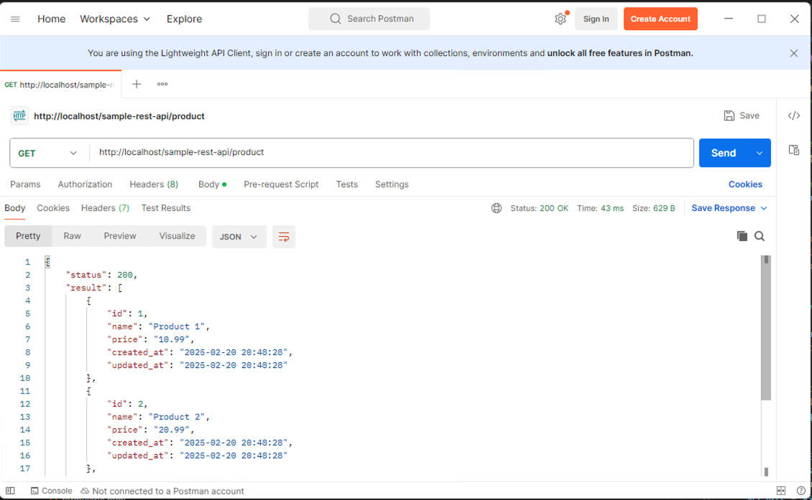
-
GET /product/1: Obtiene el producto con ID 1.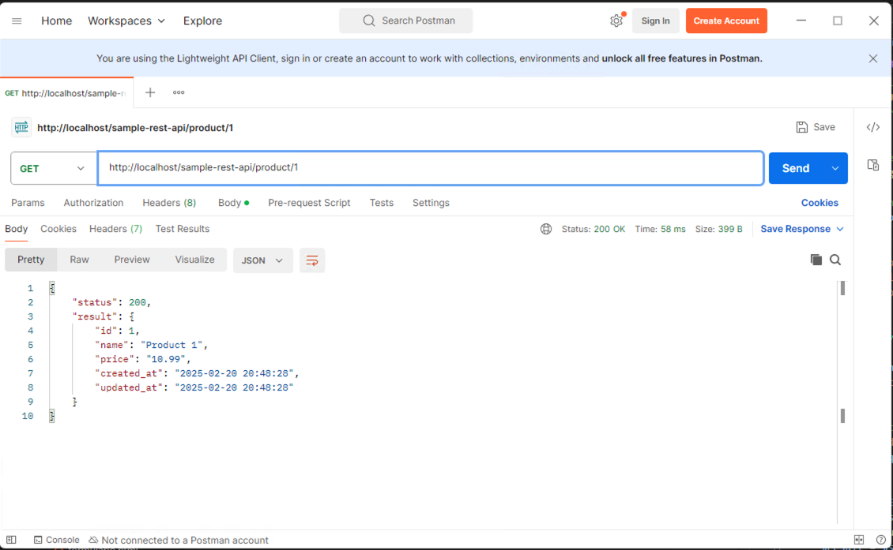
-
POST /product: Crea un nuevo producto añadiendo los datos siguientes en el cuerpo de la solicitud.{ "name": "Product 4", "price": 40.99 }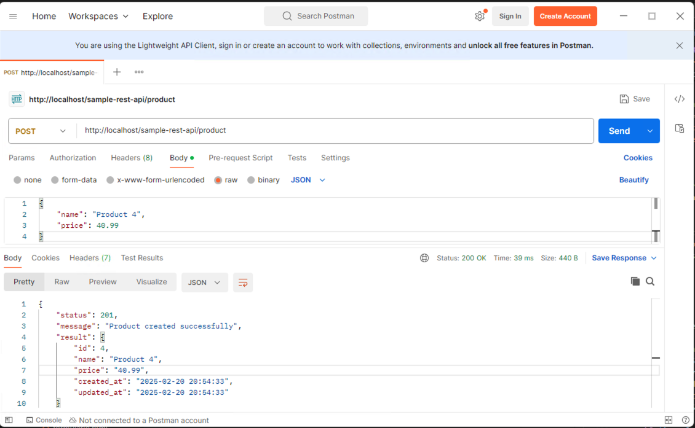
-
PUT /product/1: Actualiza el producto con ID 1 añadiendo los datos siguientes en el cuerpo de la solicitud.{ "name": "Product 1 Updated" }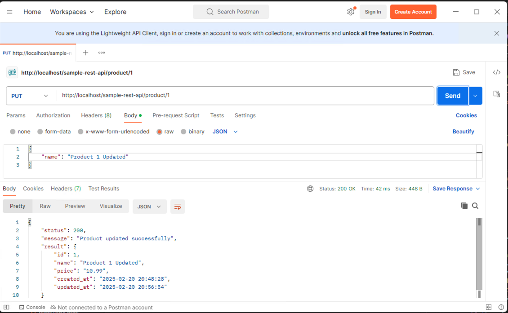
-
DELETE /product/4: Elimina el producto con ID 4.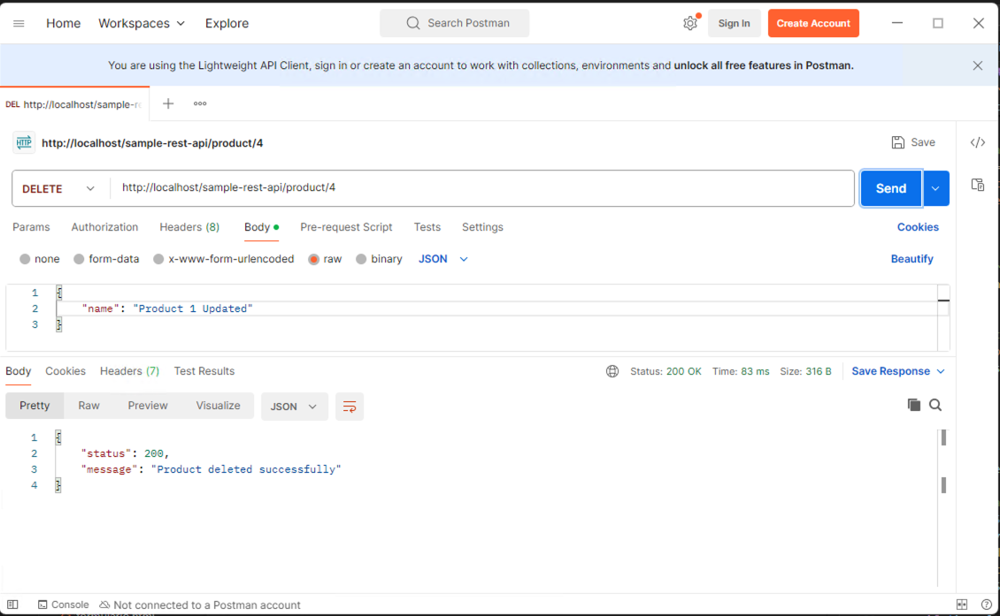
En estos ejemplos, se han probado las operaciones CRUD en la lista de productos utilizando la API REST con Slim y MySQL. Se han obtenido todos los productos, se ha obtenido un producto por ID, se ha creado un nuevo producto, se ha actualizado un producto existente y se ha eliminado un producto. Las operaciones CRUD se han realizado con éxito y se han devuelto los resultados esperados.
7. Resumen
Una API REST proporciona una interfaz para interactuar con una base de datos usando el protocolo HTTP. Este enfoque permite a los clientes acceder y manipular los datos de la base de datos de forma remota y de forma totalmente agnóstica a la tecnología subyacente.
En este tutorial, hemos aprendido a desarrollar una API REST con Slim Framework utilizando PHP. Slim Framework es un microframework PHP que permite crear aplicaciones web y APIs de forma rápida y sencilla. Hemos creado una API REST básica con Slim Framework y luego hemos dado un paso más para desarrollar una API REST que interactúe con una base de datos MySQL. Hemos utilizado la extensión mysqli de PHP para interactuar con la base de datos MySQL y hemos configurado la base de datos para almacenar y gestionar una lista de productos. Hemos desarrollado una API REST con Slim y MySQL que permite realizar operaciones CRUD en la lista de productos, como obtener todos los productos, obtener un producto por ID, crear un nuevo producto, actualizar un producto existente y eliminar un producto. Además, hemos realizado sentencias preparadas para evitar la inyección de SQL para garantizar la seguridad de la base de datos. También se ha mostrado cómo organizar el código siguiendo una estructura clara de modelos, controladores y rutas, lo que aporta ventajas como mayor mantenibilidad, reutilización de código, escalabilidad y facilidad para realizar pruebas. Finalmente, hemos probado la API REST utilizando una herramienta como Postman para verificar que funcione correctamente.
Licencia
Licencia CC BY-NC-ND 4.0
Copyright (c) 2025 [Manuel Torres - Departamento de Informática - Universidad de Almería]
Este proyecto está licenciado bajo la Licencia CC BY-NC-ND 4.0. Esto significa que puedes compartir el proyecto siempre que cites al autor, no lo uses para fines comerciales y no realices obras derivadas.